This chapter we present a new way to think about the personalized medicine, by incorporating patient molecular information and its context. We saw previously that by using different cohorts, we can embed new patients into a point cloud. The idea is that the neighborhood of the patients are similar in the molecular level, and we can draw conclusions based on this.
Each patient can be assigned a score. Scores represent a biological pathway, or in other words, a biological activity. Given a biological process, there is usually a set of genes that represent it. We can then use these set of genes to calculate scores that are proxies of this biological activity.
For example, in the previous chapters we used the ER signaling scores to motivate the continuity of ER signaling. This is not restricted to this specific pathway, we could have used any other list of genes representing a process.
By combining a score and the neighborhood of a patient, we can make direct comparisons and questions. Given a patient, how different is its score for a pathway compared to its neighbors? Is there also an alternative pathway that could be target and has a higher signaling? In this case specifically, is ER signaling more or less expressed compared to its neighbors?
The POETIC trial (Gao et al. 2019) is a breast cancer trial that had as hypothesis neoadjuvant therapy could improve overall and recurrence free survival. They gave aromatase inhibitors (AIs) for ER+ BC patients for 2 weeks prior to surgery and then 2 weeks after surgery. Moreover, they collected a needle biopsy before the treatment started and a biopsy in the surgery. They also measured the Ki67 levels, therefore we have a proxy on how well these patients responded in the short term to AIs. Also, they sent the tissues for sequencing, so microarray data is available. This is a unique cohort, in the sense that we can understand what are the responders or not, in terms of Ki67 levels, and use the molecular data to try to understand the responsiveness. The definition of responders are those patients that have a reduction of at least 60% in Ki67 levels when comparing pre-treatment versus surgery. The change in Ki67 in the paper is calculated as following.
Here we use this cohort to draw conclusions on responders and non responders and how the molecular landscape can be used. We show that some patients that are close to each other in the molecular landscape can have different pathway scores and therefore have different responses.
* The library is already synchronized with the lockfile.
Patients close to each other in the molecular landscape are somewhat molecularly close, due to how the embedding works. Therefore, we can look at patients in a neighborhood and calculate the average scores, to see what it means to be in a specific neighborhood.
To do this, we define a radius for a patient where all the patients within the euclidean ball with this radius will be selected and an average score distribution is calculated.
To calculate the average score distribution we use the rstanarm package. We set the prior distribution for the intercept to be a normal distribution centered at 0 with standard deviation of 1. All scores are in a range of -1 to 1, so this is a relatively flat prior for our use case.
The video below shows how scores change in average when comparing different neighborhoods.
Going from right to left it shows how ER signaling is decreased. From top to bottom there is a reduction of proliferation, E2F targets, and a change in EMT and TGFb signaling. These are representative scores, other pathways could be used as well.
4.2 POETIC embedding
In this section we show the embedding of the POETIC trial samples. But first we analyse some basic properties of the dataset. The data for this dataset was downloaded and processed as described at chronchi.github.io/transcriptomics in the chapter AI - GSE105777.
Total number of stable genes: 39
Total number of genes: 1008
Number of samples: 426
4.2.1 Number of samples
In this dataset there are matched samples from patients that are treated and untreated. Table 4.1
Table 4.1: Table showing the number of samples for treated and untreated patients
group
n
percent
treated
157
74
untreated
56
26
In this cohort, there is the PAM50 molecular subtype available for the untreated. Table 4.2 shows the number of patients for each subtype.
Table 4.2: Table showing the number of molecular subtypes for each group.
pam50
n
percent
her2
1
0.235
luma
77
18.075
lumb
31
7.277
normal
3
0.704
not_available
314
73.709
The numbers differ from previously, since the molecular subtype is calculated for each sample, so two molecular subtypes for each patient.
4.2.2 Proportion of top loadings
There are in total 1008 genes available out of the . Among them, 39 are the housekeeping genes. Out of the 36 genes missing, a total number of 8 are missing from the top 200 PC3 loadings, a proportion of 4%. A total number of 5 are missing from the top 200 PC4 loadings, a proportion of 2%. These are very small proportions, and we have seen from the last chapter that they will not affect the position of the patients in the embedding.
4.2.3 Embedding
Figure 4.1 shows a good mixing of the POETIC sample and how all the patients are scattered across the whole landscape. Here all samples are plotted, meaning that every two dots correspond to a single patient.
Figure 4.1: PCA embedding of all samples from TCGA, SCANB and METABRIC including the POETIC samples on top. (A) Colored by cohort, (B) colored by ER status, (C) colored by PAM50 molecular subtype.
Figure 4.2 shows the embedding of baseline samples from patients that received endocrine therapy prior to surgery. Patients on the left part of the molecular landscape are considered to be non responders, this coincides with the fact this region corresponds to the ER- BC patients.
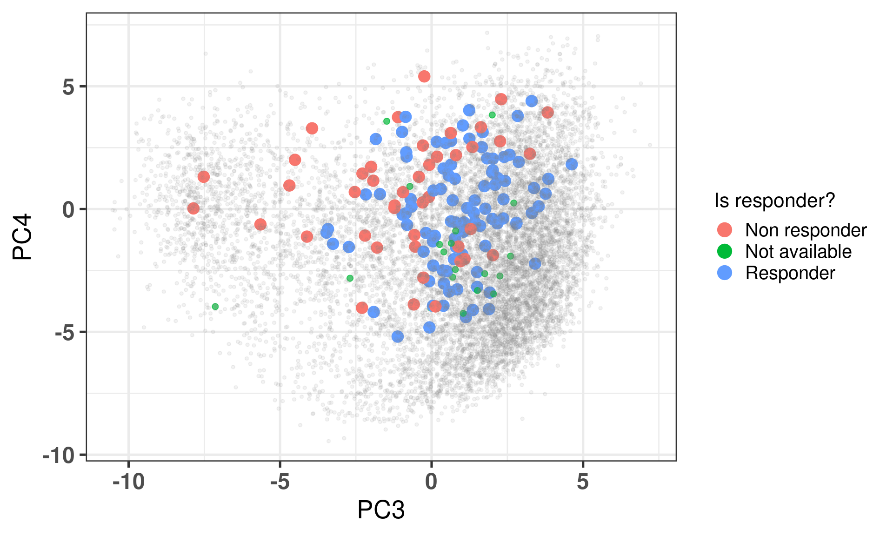
Figure 4.2: PCA embedding of all samples from TCGA, SCANB and METABRIC including the POETIC samples on top. POETIC samples correspond to only baseline treated patients.
And when checking the first two components, the POETIC data is closer to METABRIC, which makes sense since both are microarrays, as it can be seen in Figure 4.3.
Figure 4.3: Biplot of first two PCA components from POETIC, TCGA, SCANB and METABRIC. POETIC is highlighted in the plot and has a bigger point.
4.2.4 Differences in PC3 for responders and non responders
We now also compare the differences in non responders vs responders according to the third component.
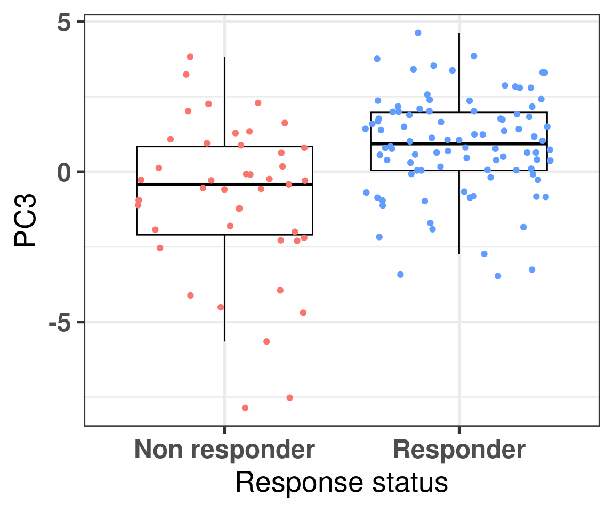
Figure 4.4: Comparison of the PC3 between responders and non responders
We see that there is a clear difference, we now use bayesian stats to do the comparison and get the posterior distribution of the difference in PC3.
Model Info:
function: stan_lm
family: gaussian [identity]
formula: PC3 ~ is_responder
algorithm: sampling
sample: 4000 (posterior sample size)
priors: see help('prior_summary')
observations: 137
predictors: 2
Estimates:
mean sd 10% 50% 90%
(Intercept) -0.8 0.3 -1.1 -0.8 -0.4
is_responderResponder 1.6 0.3 1.2 1.6 2.0
sigma 2.0 0.1 1.8 2.0 2.2
log-fit_ratio -0.3 0.1 -0.4 -0.3 -0.2
R2 0.2 0.1 0.1 0.2 0.4
Fit Diagnostics:
mean sd 10% 50% 90%
mean_PPD 0.3 0.2 0.0 0.3 0.6
The mean_ppd is the sample average posterior predictive distribution of the outcome variable (for details see help('summary.stanreg')).
MCMC diagnostics
mcse Rhat n_eff
(Intercept) 0.0 1.0 1226
is_responderResponder 0.0 1.0 1249
sigma 0.0 1.0 1870
log-fit_ratio 0.0 1.0 1297
R2 0.0 1.0 1075
mean_PPD 0.0 1.0 3245
log-posterior 0.0 1.0 1171
For each parameter, mcse is Monte Carlo standard error, n_eff is a crude measure of effective sample size, and Rhat is the potential scale reduction factor on split chains (at convergence Rhat=1).
The difference is clear, when looking at the parameter is_responderResponder. The Rhat is reasonable and the number of effective sample size is good as well. Below we plot the average posterior distribution of the difference between responders and non responders.
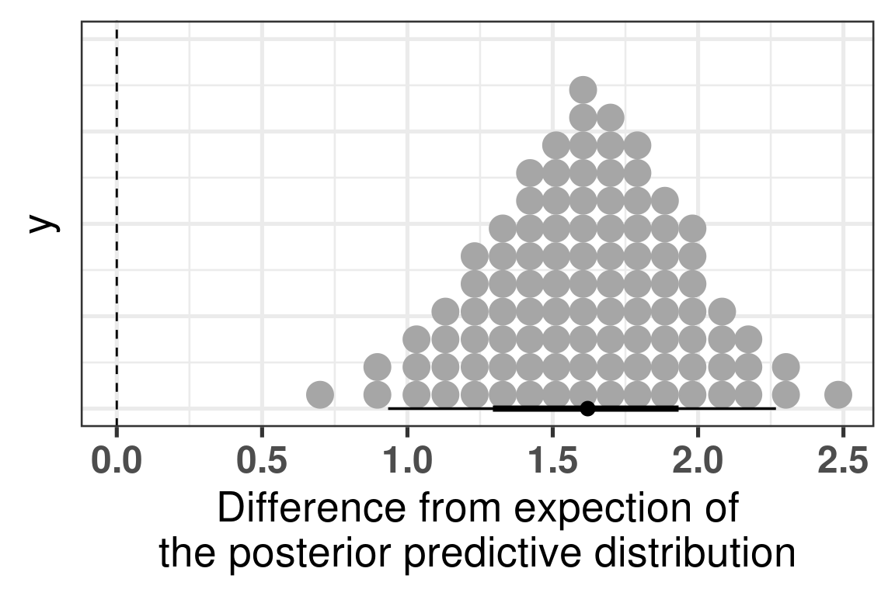
Figure 4.5: Comparison of the PC3 between responders and non responders. Difference in the expected posterior predictive distributions. Each dot corresponds to a 1% quantile.
We see that the difference is 100% higher than 0 and even more the difference is higher than 0.5, meaning that responders have higher PC3 compared to non responders. The plot below shows the average values as well for responders and non responders separately.
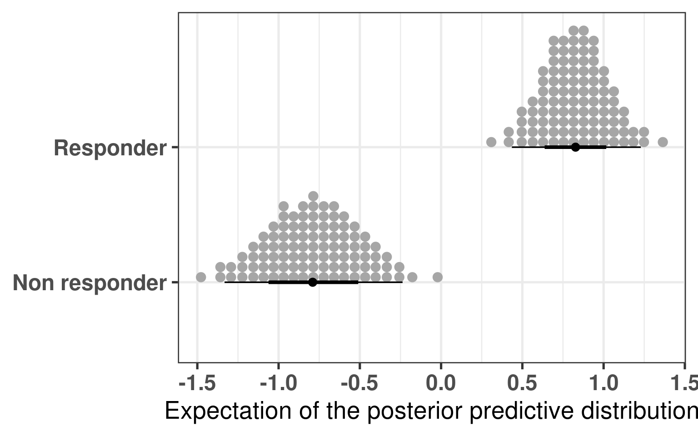
Figure 4.6: ?(caption)
And to conclude we also calculate the p-value for the sake of it.
The p-value is around 2.9e-06, very small, three stars!
Also, it is good to compare the continuous score with the third component. We calculate the pearson correlation coefficient and see that PC3 and change in Ki67 is correlated.
Figure 4.7: ?(caption)
We can also compare the top responders and top non-responders. We select all the samples that have a change in ki67 higher than 0% and we select the same amount of samples among the top responders.
Figure 4.8: ?(caption)
There is a clear distinction between the top responders and top non-responders. Similar to before we calculate the difference using bayesian stats.
Model Info:
function: stan_lm
family: gaussian [identity]
formula: PC3 ~ is_responder
algorithm: sampling
sample: 4000 (posterior sample size)
priors: see help('prior_summary')
observations: 20
predictors: 2
Estimates:
mean sd 10% 50% 90%
(Intercept) -1.3 0.8 -2.3 -1.3 -0.4
is_responderResponder 2.3 1.0 1.0 2.3 3.6
sigma 2.5 0.4 2.0 2.4 3.0
log-fit_ratio 0.1 0.2 -0.1 0.1 0.3
R2 0.2 0.1 0.0 0.1 0.3
Fit Diagnostics:
mean sd 10% 50% 90%
mean_PPD -0.2 0.8 -1.2 -0.2 0.8
The mean_ppd is the sample average posterior predictive distribution of the outcome variable (for details see help('summary.stanreg')).
MCMC diagnostics
mcse Rhat n_eff
(Intercept) 0.0 1.0 1624
is_responderResponder 0.0 1.0 1565
sigma 0.0 1.0 2238
log-fit_ratio 0.0 1.0 1925
R2 0.0 1.0 1751
mean_PPD 0.0 1.0 3406
log-posterior 0.0 1.0 1342
For each parameter, mcse is Monte Carlo standard error, n_eff is a crude measure of effective sample size, and Rhat is the potential scale reduction factor on split chains (at convergence Rhat=1).
The difference is clear, when looking at the parameter is_responderResponder. The Rhat is reasonable and the number of effective sample size is good as well. Below we plot the average posterior distribution of the difference between responders and non responders.
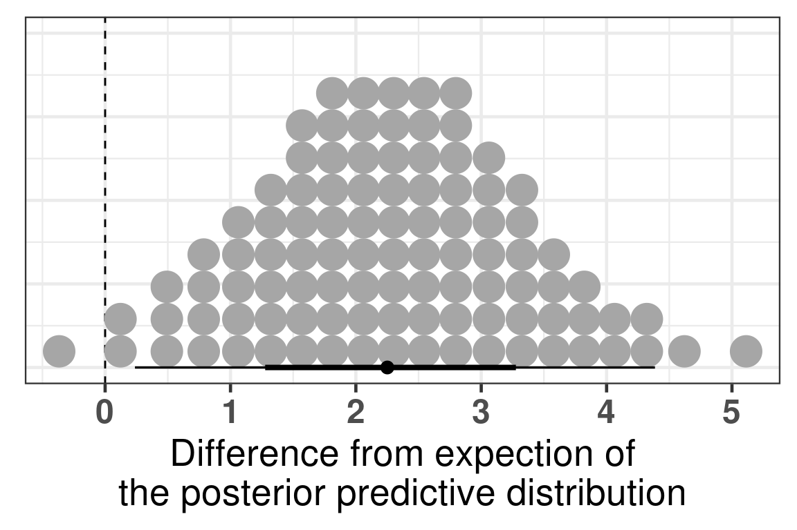
Figure 4.9: Comparison of the PC3 between top responders and non responders. Difference in the expected posterior predictive distributions. Each dot corresponds to a 1% quantile.
There is a 99% probability that the difference is higher than 0, and a probability of 91% that the difference is higher than 1.
4.3 Scoring all samples
In the last chapters scores were showed for TCGA, SCANB and METABRIC. Figure 2.23 shows how ER signaling changes as patients move across the molecular landscape. We intend to use the scores now for the POETIC samples. We first start by calculating using GSVA as well and include in the dataframe with the other cohorts. Before moving to the next chapter, we will analyse and compare the scores across the responders and non responders.
Figure 4.10 shows that when using the scores, it looks like in average at baseline \(SET_{ER/PR}\) is lower in non responders than in responders. For the other scores there is no clear difference.
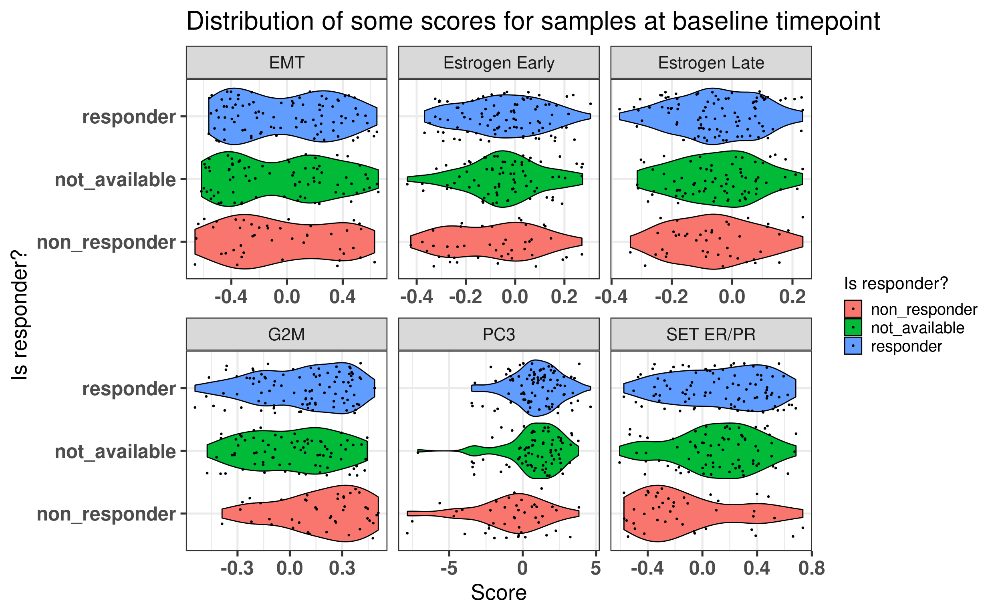
Figure 4.10: Baseline scores for all treated patients in the POETIC trial. G2M corresponds to a proliferation score, EMT to epithelial to mesenchymal transition score and the others are related to ER signaling.
We see that for PC3 and SET ER/PR There are some differences in terms of the responders and non responders.
Let us take a closer look at those patients. We start by plotting the scatter plot of PC3 vs SET ER/PR and color by response status defined by the POETIC trial.
Figure 4.11: Comparison of the third component with SET ER/PR scores colored by response status.
This figure shows that there is a correlation between third component and SET ER/PR for the POETIC trial data as well as it was already seen from the other cohorts. Moreover, it seems that the responders have higher PC scores in general. We now correlate for each subgroup (responder and non responders) the PC3 and the change in percentage for Ki67.
Figure 4.12: Correlation between change in Ki67 versus PC3 stratified by response group.
Now another metric we can calculate from our dataset is the difference of the embedding positions between the different samples of the same patient. The idea is that if a patient responded well, there were bigger changes as well in the transcriptomics and that is reflected in the embedding.
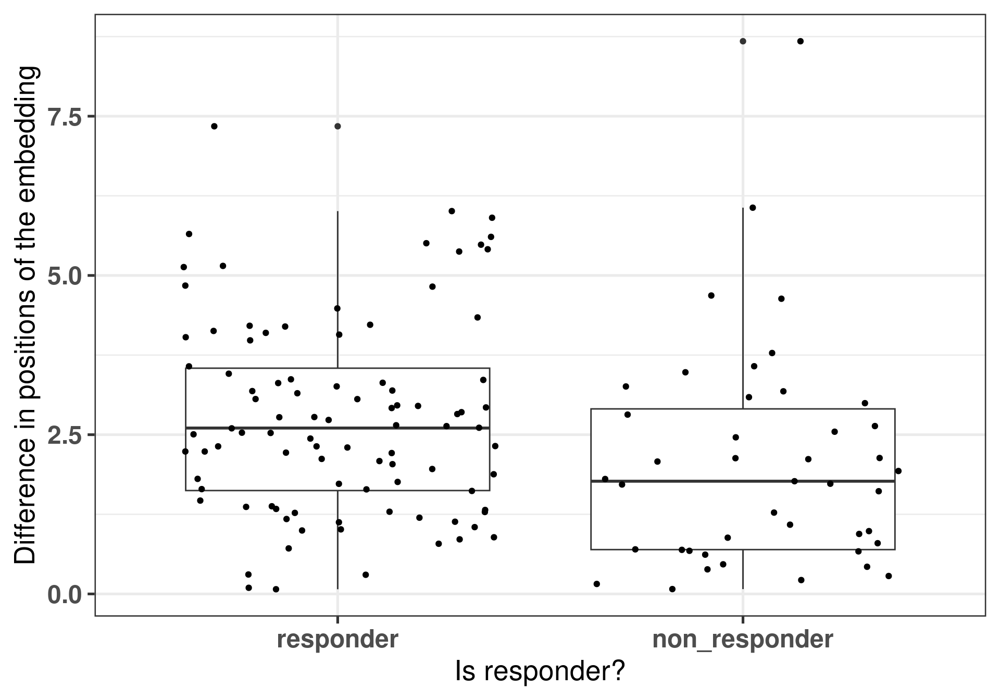
Figure 4.13: Differences of the embeddings for each patient individually stratified by response status. Each dot corresponds to a single patient.
And now we perform a comparison of these positions by using rstanarm to get the posterior distributions of the differences.
The figure below shows the distribution of the averages of the differences in the embedding of the projections.
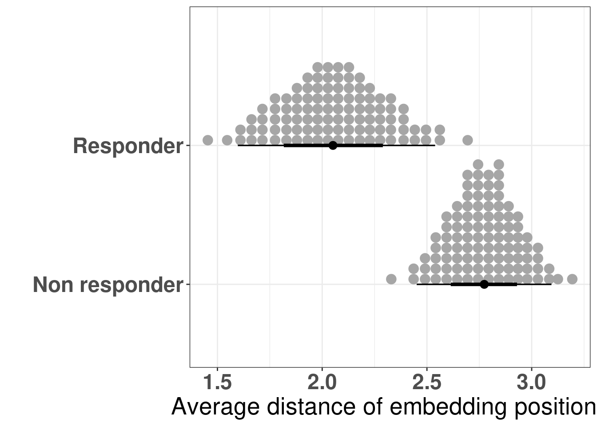
Figure 4.14: Differences of the embeddings for each patient individually stratified by response status. Each dot corresponds to a single patient.
And the figure below shows the posterior distribution of the differences in average.
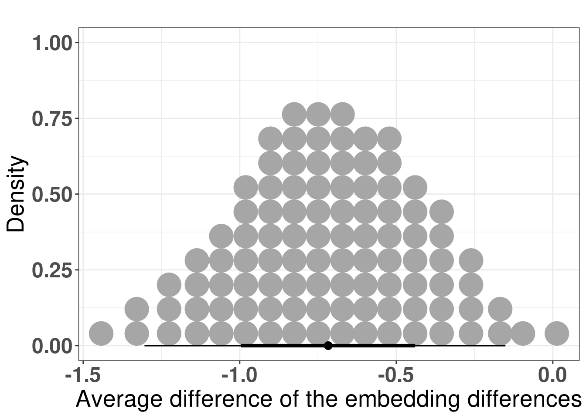
Figure 4.15: Differences of the average differences in the embedding for each patient individually. The comparison made was non responder vs responder, which means that if non responder has a lower difference in average, the difference in difference will be negative.
4.4 Analysing patient neighborhoods
There are two ways to interpret the embedding. If the patient has ER+ BC and its embedding is close to the ER- BC patients, we can infer that the endocrine response might not work so well, as it was shown in Figure 4.2. The other option is to compare the patient’s score to the average score of its neighborhood.
What is a neighborhood? When performing the embedding, global structures are not preserved usually. In this sense we only compare patients that are close to each other in an euclidean neighborhood, i.e., we calculate a radius around each sample and see what other samples are within this ball given the euclidean distance.
Given a neighborhood, one can calculate the posterior average score of all samples from METABRIC, SCANB and TCGA and use that as an indication of average score that we can compare other patients to. The concept is that if an ER+ BC patient has a much lower ER signaling score, it means the patients will not respond so well to endocrine therapy, as they are very different from their neighboors.
To showcase the ability to use the scores and infer results, we use the POETIC trial patients to compare the scores. This cohort is special in the sense that the patients are filtered based on selection criterias, meaning that the patients are clinically similar.
Two random patients in very close neighborhoods were selected to showcase the ability of the molecular landscape. The id of the patients are 63 and 236. Table 4.3 shows the clinical features of these patients. One of them is HER2+. Patient 63 had a higher Ki67 baseline level but a very good response to endocrine therapy. Patient 236 did not respond to endocrine therapy in terms of reduction of Ki67 levels.
Table 4.3: Clinical features from patients 63 and 236.
patient_nb
er_status
her2_status
ki67
change_ki67
ccca_surgery_ki67_2_7
63
pos
Positive
16.60702
-69.958509
noCCCA
236
pos
Negative
11.30906
5.593711
noCCCA
Figure 4.16 shows the embedding of two distinct patients in a similar neighborhood.
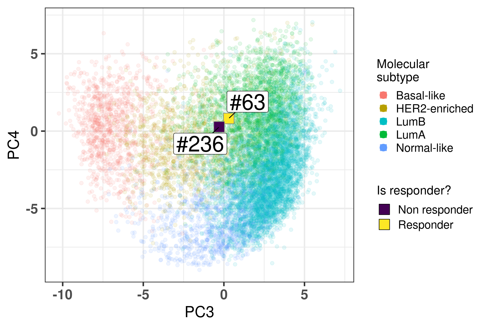
Figure 4.16: Plot of two selected patients in the molecular landscape. One is a responder and the other is a non responder. The patient id numbers are 63 and 236.
And now we calculate the average scores for each patient neighborhoods. We start by defining a radius value. After that we select the patients in the neighborhood and use rstanarm to get the posterior distribution of the average score in the neighborhood. For this we use the function stan_glm to calculate the average. This is effective because it can be paired with the package tidybayes for plotting. It makes extremely easy to deal with posterior data. For the average we use a normal prior centered at 0 with 1 standard deviation, since all scores are between -1 and 1.
Patient 63 Figure 6.8 is considered a responder. According to the scores, when comparing the estrogen early signature to its average distribution in the neighborhood, the score is higher.
Figure 4.17: Posterior distribution of the average scores in the neighborhood of patient 236 from POETIC trial. Each dot corresponds to a 1% quantile.
Patient 236 Figure 6.9 was considered a non responder. According to the scores, when comparing the estrogen early signature to its average distribution in the neighborhood, the score is lower, being in the 5% quantile.
Figure 4.18: Posterior distribution of the average scores in the neighborhood of patient 236 from POETIC trial. Each dot corresponds to a 1% quantile.
When comparing these two patients, there is also a difference in the androgen response score, which could be a reflection of different estrogen signaling.
Now we show only the plots from the ER signaling signatures and androgen response as well.
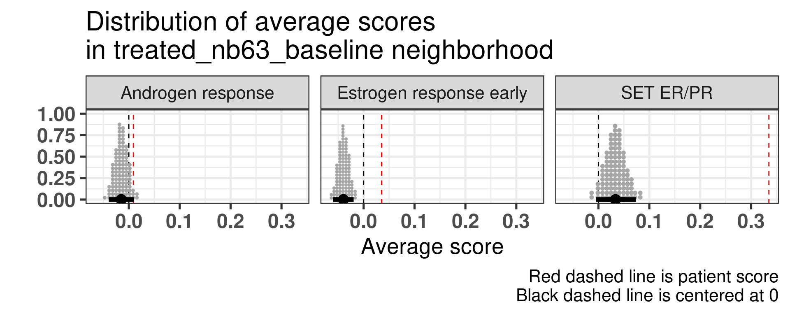
Figure 4.19: Posterior distribution of the average scores in the neighborhood of patient 236 from POETIC trial. Each dot corresponds to a 1% quantile.
Figure 4.20: Posterior distribution of the average scores in the neighborhood of patient 236 from POETIC trial. Each dot corresponds to a 1% quantile.
4.4.1 Matching other responders and non-responders
In this section we now match all the responders and non-responders in a close neighbourhood and try to do a similar analysis. We use a threshold of 0.5 for samples close enough, which corresponds to the 1% percentile.
In total there is number of 38 neighborhoods that we will analyse with a total of 56 unique samples, with a total of 32 responders and 24 non-responders, meaning that some responders they share non-responders.
By analysing the table below we get the following results. The way the table was obtained was by manually inspecting all the 38 neighrborhoods and checking in which the samples scores were below (b), in the average (m) and above average (a). The columns with the a, m and b letters represent the scores ER Early and SET ER/PR along with their respective positions.
In out of the 38 neighborhoods, there are 8 where the responders are at average or above estrogen response early and non responders are below. The total number of unique non-responders is 6. On the other hand, there are 9 neighborhoods with 6 unique non-responders that have higher scores than average and in which 8 non-responders have scores below average.
The number increases to 14 when we consider SET ER/PR and out of the 14 neighborhoods, there are 10 unique samples from non-responders.
On the other hand there are 8 neighborhoods which have non responders with SET ER/PR higher than average and responders with scores below average. Out of these 8 neighborhoods, the number of unique non-responders are 6. In total, there are 10 non-responders that are below average, 6 that are above average and the remaining 8 have similar direction as the responders.
These results suggest that SET ER/PR might be a better signature to compare in the neighborhoods.
4.4.2 Analysing all patients
We now try to extend this comparison to something more systematic. Instead of looking just for these two patients we will compare the neighborhoods for the top responders and non-responder patients. The first thing we have to have in mind is that some non responders they did respond to the drug, just the reduction in Ki67 was not so big. For example patient 209 has a reduction of 40% in Ki67 going from 16% to 9%. Still this patient is considered a non-responder.
We don’t select all patients for the comparisons. We select only patients that are at least in the HER2 enriched region to the right, so we exclude the basal like patients. The reason for this as well is because they all either have low Estrogen response early scores or low SET ER/PR.
HALLMARK_ESTROGEN_RESPONSE_EARLY
SET_ERPR
PC3
treated_nb69_baseline
-0.265
-0.50
-4.5
treated_nb76_baseline
-0.275
-0.19
-4.1
treated_nb80_baseline
-0.013
-0.49
-5.6
treated_nb229_baseline
-0.234
-0.54
-4.7
treated_nb230_baseline
-0.308
-0.50
-7.5
treated_nb237_baseline
-0.377
-0.29
-7.9
4.4.2.1 Non-responders
Estrogen score still close to 0, high proliferation at baseline and higher androgen score. But in this case SET ER/PR is lower than average. There is a mismatch.
This patient has a score close to 0 still but low proliferation in general. This is a case where the EMT signaling is really at average and TGFb is super low. Again SET ER/PR is much lower, mismatch with ER signaling.
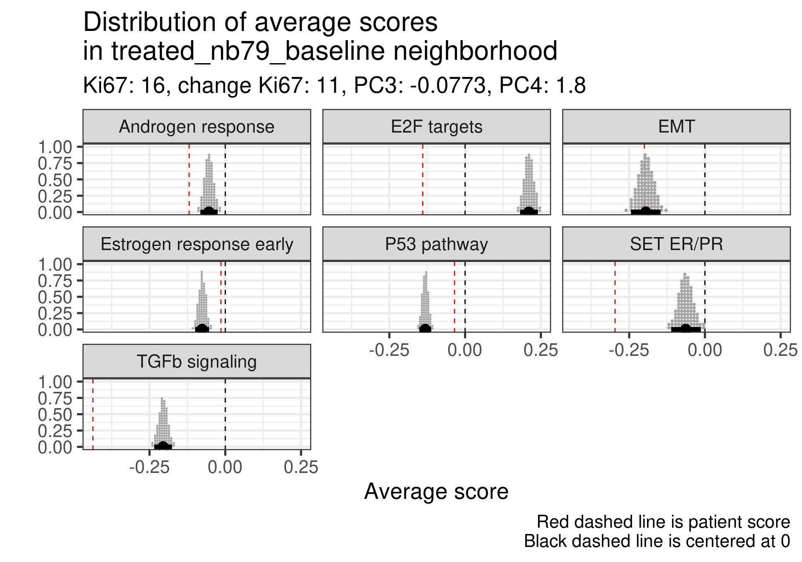
Estrogen signaling close to 0, high androgen and E2F targets and high EMT. Intriguing patient, both ER and SET ER/PR are going in the same direction and above average.
Low ER signaling and super high EMT with an increase P53 pathway expression. Super low ER signaling here in terms of SET ER/PR.
Low ER score, even lower than average and low EMT signaling. Average E2F targets and lower than average for SET ER/PR.
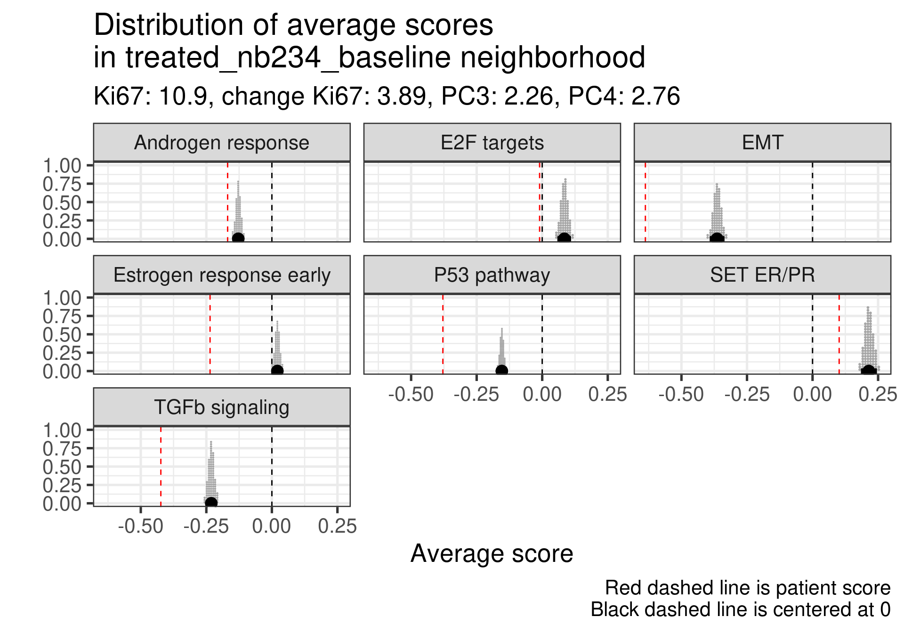
This case is a bit different, the ER signaling is higher, E2F targets at baseline is not so high, even lower than the average, but in this case androgen response is much higher and EMT is extremely high. There is a relative mismatch between ER early and SET ER/PR. SET ER/PR is relatively small and close to the average.
Androgen score lower than the average and high E2F targets at baseline. In this case we see a very small EMT signature. In this case there is again a mismatch between ER signaling and SET ER/PR.
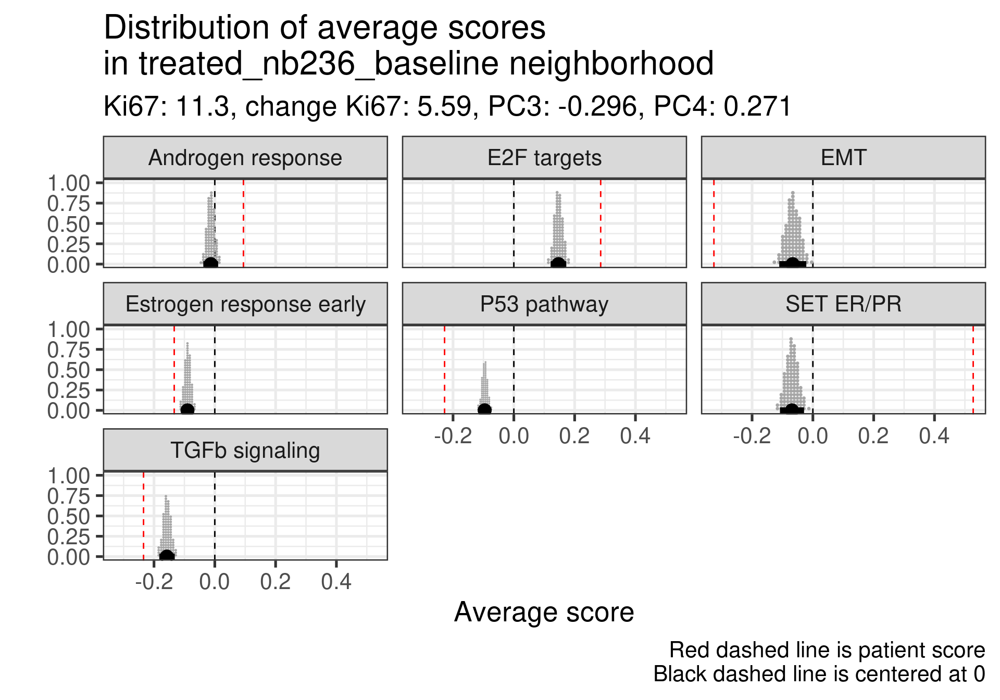
This one has a low ER signaling as well and higher E2F targets score. Massive difference in SET ER/PR here when comparing to the average.
In general all these non responders with no change in Ki67 had a low ER signaling score or a mismatch between ER early and SET ER/PR
4.4.2.2 Top responders
We now investigate the top responders with the biggest decrease in Ki67.
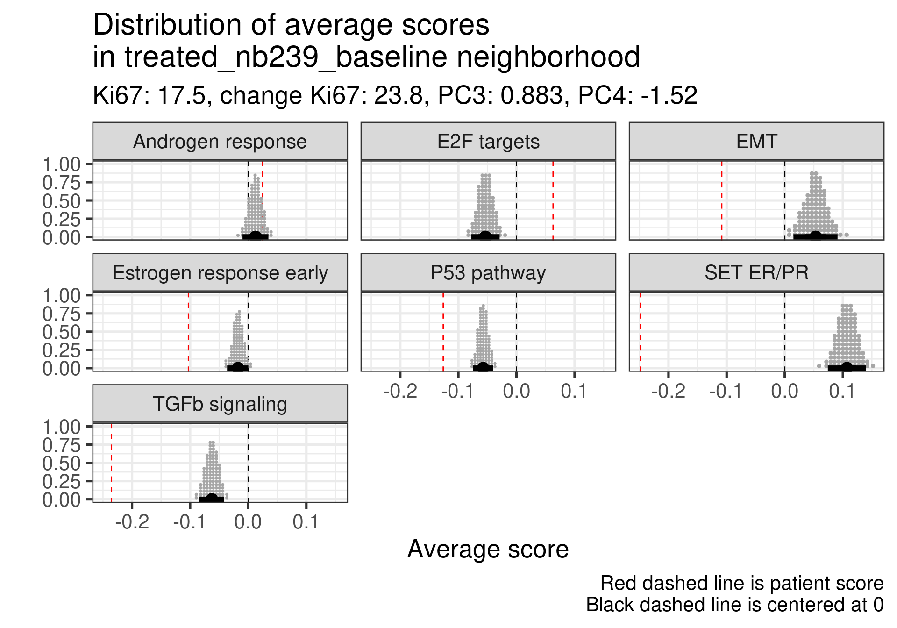
First thing is that this patient had already a positive score and a very low Androgen signaling score. Moreover the Ki67 is low. This is one of the furthest patients to the right and still has a low ER signaling score.
A bit high E2F targets but higher than average of the estrogen signaling score. High SET ER/PR.
Here the ER signaling is above average and androgen response is similar to the average. E2F targets is high. Also super high SET ER/PR.
Very low E2F targets and low Androgen response. ER is about the average. SET ER/PR is still positive. This sample is in the luminal A region also.
In this case ER signaling is also above average and E2F targets is similar to the average of neighbors. SET ER/PR on average and in the expected direction.
This one is intriguing, ER signaling is extremely low, E2F targets is very low as well but the patient responded pretty well. But there is a big mismatch between Ki67 and transcriptomics for this patient. Further investigation should be performed. Actually probably the samples have mixed names. Below are the values of the pathways after treatment:
It looks super weird that there is a big increase in proliferation based on the transcriptomic data considering the reduction in the Ki67 percentage. Not only that, ER signaling increases. It is very likely that the sample has a mixed label.
Moving to the next one.
This one also is intriguing, estrogen signaling is very low but the patient is a responder with a good decrease in Ki67. Below is a table with the values for surgery and baseline. We see that there is indeed a decrease in proliferation and also in estrogen signaling. Also this sample is closer to the normal like and luminal A region.
And last patient.
This patient has a score slightly higher than the average, but still negative. Nonetheless, the patient responded well to the therapy. One note is that this patient is close to the HER2 enriched region.
In general non responders had more mismatches between SET ER/PR and below average values than responders.
4.4.2.3 Responders in the middle of embedding
We lastly check the responders that are in the middle of the molecular landscape to see how they are.
Low ER signaling in both cases. This patient specifically had very high Ki67 levels at baseline.
Also ER signaling is low here compared to the average, but a very low Ki67 proliferation index at baseline.
4.4.2.4 Conclusion
In general what we can see is that when comparing responders and non responders the main difference is in the position of the molecular landscape. If we select the top responders and the top non-responders in terms of decrease in Ki67 levels, we see that non responders have way lower third principal component (Figure 4.21).
Figure 4.21: PC3 comparison of the top non responders and responders
4.5 Predicting response to endocrine therapy
We now try to use a penalized logistic regression to predict patient response, as defined by the POETIC trialists using the principal components. For this we already saw that in average the patients further to the left are non-responders and further to the right would be responders, suggesting a predictive power of the molecular landscape. The landscape still is not perfect as there is a lot of overlap between the responders and non-responders. So we try to use more principal components to capture the differences.
Just when randomizing the train test split, we need to make sure that we include some of the samples that are in the basal like region in both splits, since they are in small numbers. Due to the small sample size, we use the components starting from 3 and going up to 20.
In this dataset the total of responders vs non responder is:
More than 2/3 are responders. Using a set seed for the randomization, the numbers of responders and non responders are shown below for the training set.
And for the test set.
And we compare the PC3 values distributions to see if they are equally distributed.
They are similarly distributed, so we can proceed with the training and testing strategy.
The plot below shows the misclassification error versus the lambda used for the penalization term in the logistic regression.
The plot below shows the misclassification error for different \(\lambda\) values and number of components.
Overall the misclassification is pretty similar for all number of variables. We select the variables obtained with the lambda that is 1 SE away from the minimum. So in total we have three variables: The intercept and PC3, PC10, PC20.
And below we show the confusion matrix.
True
Predicted 0 1 Total
0 1 3 4
1 14 28 42
Total 15 31 46
Percent Correct: 0.6304
We see that the accuracy is very low and most of the patients are classified as responders. This could be potentially due to the class imbalance, but the results are still underwhelming.
Let us take a look on the patients that were predicted to be non responders and check their Ki67 differences in baseline and surgery.
All the patients that were misclassified as non responders they have a very low third principal component and their baseline Ki67 is quite high, so the decrease in proliferation is not actually big enough. It is still considered a responder.
4.6 Differential expression analysis
Instead of looking at the neighborhood, we could do a differential expression analysis at baseline between responders and non-responders that are close to each other. We can then perform gene set enrichment analysis to understand which pathways are different across these two groups.
Based on the histogram below there is not differentially expressed gene.
And the plot below shows the position of the selected samples in the embedding.
Below we show the embedding using the response status to color.
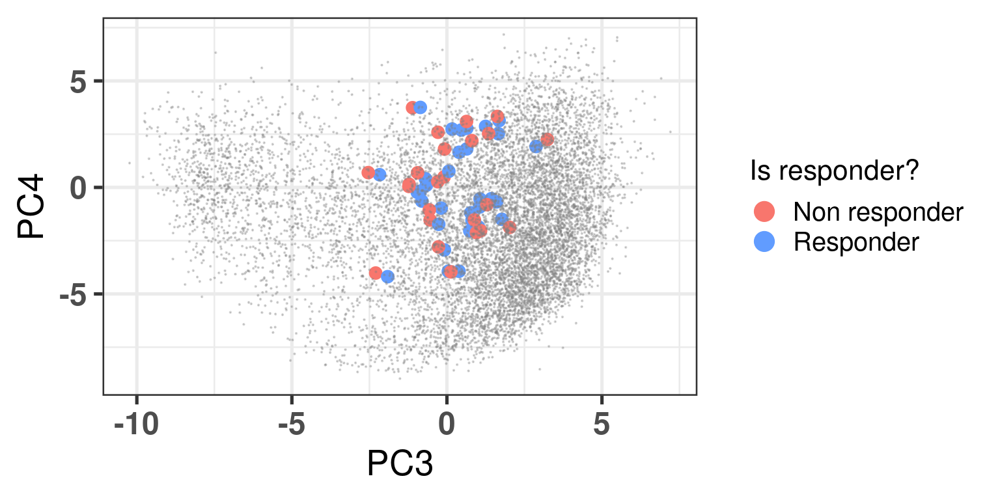
Figure 4.22: ?(caption)
We now show the position in the embedding colored by the responders and non responders but with the threshold set to -10% of change in Ki67 instead of the -60%.
Some of the samples are really in the middle of the embedding, but they are very few, only 5 in total.
We now do a paired analysis of these samples. For each pair of samples we take the difference of the scores and compare the results for each one of the selected pathways.
We next show the plot with the average of the score for the responders if there is only one non-responders in the neighborhood versus the difference.
First we see that there is a negative correlation in Androgen response and PI3K AKT MTOR signaling. Moreover, all responders had a negative PI3K AKT MTOR signaling score, whereas among the non-responders there were 4 with positive scores. The dashed lines correspond to the lines crossing 0 in both directions and the identity line, slope 1 and intercept 0.
Next we do an analysis on the remaining samples just out of curiosity. Since all the non-responders on the basal like region are in this other set, we expect to see many DEGs and also ER signaling down in the non-responders.
As expected the distribution of p-values below shows that there are statistically significant differentially expressed genes.
And the plot below shows also that there are differences in the pathways when comparing responders and non-responders.
The differences in ER signaling are clear and also differences in PI3K AKT MTOR signaling, but mostly driven by the samples that are in the basal like region.
4.7 Thresholding change in Ki67
We saw previously that the line between responders and non responders is very thin. Next we change the thresholds of Ki67 to see how much the responder and non-responder proportion of androgen response with respect to the neighborhood changes. We should look at different thresholds since Ki67 is a noisy estimate.
Just to double check we randomly select one patient and compare visually the results.
sample_name pathway position threshold is_responder
1 treated_nb65_baseline Androgen response a -60 responder
2 treated_nb65_baseline E2F targets b -60 responder
3 treated_nb65_baseline EMT a -60 responder
4 treated_nb65_baseline Estrogen response early a -60 responder
5 treated_nb65_baseline P53 pathway a -60 responder
6 treated_nb65_baseline SET ER/PR b -60 responder
7 treated_nb65_baseline TGFb signaling m -60 responder
All looks good, we can move on and do a similar analysis for the Androgen response signature.
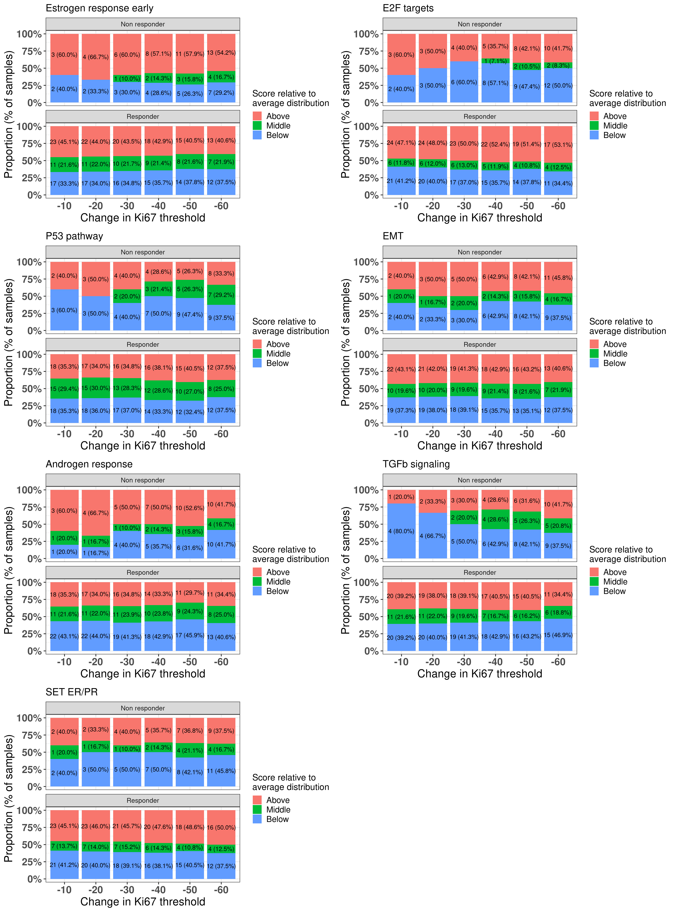
Here we see that there is a distinction as one changes the threshold for androgen response and TGF\(\beta\) signaling. Androgen response is expected and TGF\(\beta\) signaling has been linked to EMT and an increase in proliferation in several cancers. Figure 4.23 shows the differences across the difference thresholds for both AR and TGFb signaling.
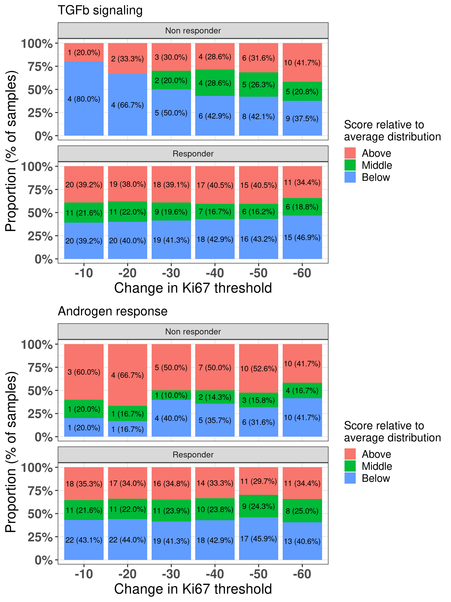
Figure 4.23: Comparison between responders and non-responders and the proportion of samples in each group when comparing to the average distribution and changing threshold for the change in Ki67.
And next we do a similar analysis as done by the SET ER/PR and Estrogen response early. For each pair of samples we compare the responders and non-responders and check if Androgen response is above average for non-responders and below/middle average for non-responders. On the other hand we do similarly for TGF\(\beta\) signaling but we compare below average for non-responders versus middle/above average for responders.
Androgen response n percent
no 22 0.5789474
yes 16 0.4210526
TGFb signaling n percent
no 27 0.7105263
yes 11 0.2894737
And the number of neighborhoods that have both comparisons with a “yes” are:
TGFb signaling
1 Androgen response no yes
2 no 34.2% (13) 23.7% (9)
3 yes 36.8% (14) 5.3% (2)
We see that in general there is a kind of matching, i.e., high androgen response in non-responders and low/median for responders and also low TGF\(\beta\) signaling for non-responders and the opposite for responders in the majority of the cases. In only two pairs there was the mismatch in the expected directions. But in these two pairs they represent samples that are close to each other, meaning that there is just one responders where this happens and two non-responders. Below is a figure representing that as well.
Figure 4.24: ?(caption)
Gao, Qiong, and Elena López-Knowles, Maggie Chon U. Cheang, James Morden, Ricardo Ribas, Kally Sidhu, David Evans, et al. 2019. “Impact of Aromatase Inhibitor Treatment on Global Gene Expression and Its Association with Antiproliferative Response in ER\(\mathplus\) Breast Cancer in Postmenopausal Patients.”Breast Cancer Research 22 (1). https://doi.org/10.1186/s13058-019-1223-z.
Source Code
# Pathway activity in a personalized contextThis chapter we present a new way to think about the personalized medicine,by incorporating patient molecular information and its context. We saw previously that by using different cohorts, we can embed new patientsinto a point cloud. The idea is that the neighborhood of the patients are similar in the molecular level, and we can draw conclusions based onthis. Each patient can be assigned a score. Scores represent a biologicalpathway, or in other words, a biological activity. Given a biologicalprocess, there is usually a set of genes that represent it. Wecan then use these set of genes to calculate scores that are proxies of this biological activity.For example, in the previous chapters we used the ER signalingscores to motivate the continuity of ER signaling. This is notrestricted to this specific pathway, we could have used anyother list of genes representing a process. By combining a score and the neighborhood of a patient, we can make direct comparisons and questions. Given a patient,how different is its score for a pathway compared to itsneighbors? Is there also an alternative pathway that couldbe target and has a higher signaling? In this case specifically, is ER signaling more or less expressed comparedto its neighbors? The POETIC trial [@Gao2019]is a breast cancer trial that had as hypothesisneoadjuvant therapy could improve overall and recurrence freesurvival. They gave aromatase inhibitors (AIs) for ER+ BC patientsfor 2 weeks prior to surgery and then 2 weeks after surgery.Moreover, they collected a needle biopsy before thetreatment started and a biopsy in the surgery. Theyalso measured the Ki67 levels, therefore we have a proxyon how well these patients responded in the short term to AIs. Also, they sent the tissues for sequencing, so microarray data is available. This is a unique cohort, in the sense that we can understand what are theresponders or not, in terms of Ki67 levels, and usethe molecular data to try to understand the responsiveness. The definition of responders are those patients that have a reduction of at least 60\%in Ki67 levels when comparing pre-treatment versus surgery. The change in Ki67 in the paper is calculated as following.$$\text{Change Ki67} = -100*(1 - \frac{\text{Surgery Ki67}}{\text{Baseline Ki67}})$$Here we use this cohort to draw conclusions on respondersand non responders and how the molecular landscape can be used. We show that some patients that are close to eachother in the molecular landscape can have differentpathway scores and therefore have different responses.```{r setup}renv::restore()library(tidyverse)library(ggplot2)library(PCAtools)library(tidybayes)library(GSVA)library(SummarizedExperiment)library(rstanarm)library(glmnet)source("../R/utils.R")source("../R/first_run.R")# Here we are using rds files from previous chapters, so we source# in any case the load_rds_files.R and exclude all the associated files# that are generated in this current chapterif (first_run){ load_at_setup <-FALSE} else { load_at_setup <-TRUE}name_document <-"scoring"sapply(paste0("../../results/", c("plots", "rds_files", "tables"), "/", name_document), dir.create,showWarnings =FALSE,recursive =TRUE)source("../R/load_rds_files.R")# by setting the dev to png and pdf, this saves the figures in a specific# folder in both formats. moreover, since png is coming first, it shows# this figure when rendering the html. What is nice about this is that it# inherits the properties from the chunk to save the figure, so no need# to use ggplot2::ggsave to save the plots. this also works knitr::opts_chunk$set(dev =c('png', 'pdf'))options(bitmapType ='cairo')```## Calculating scores in neighborhoodsPatients close to each other in the molecular landscape are somewhatmolecularly close, due to how the embedding works. Therefore, we can look at patients in a neighborhood and calculate the average scores,to see what it means to be in a specific neighborhood. To do this, we define a radius for a patient where all the patientswithin the euclidean ball with this radius will be selected and an average score distribution is calculated.To calculate the average score distribution we use the `rstanarm` package. We set the prior distribution for the intercept to be a normal distributioncentered at 0 with standard deviation of 1. All scores are in a range of-1 to 1, so this is a relatively flat prior for our use case.The video below shows how scores change in average when comparing differentneighborhoods. ```{r, eval = first_run}scores_to_use <-c("Estrogen response early","E2F targets","P53 pathway","EMT","Androgen response","TGFb signaling","SET ER/PR") %>%`names<-`(c("HALLMARK_ESTROGEN_RESPONSE_EARLY","HALLMARK_E2F_TARGETS","HALLMARK_P53_PATHWAY","HALLMARK_EPITHELIAL_MESENCHYMAL_TRANSITION","HALLMARK_ANDROGEN_RESPONSE","HALLMARK_TGF_BETA_SIGNALING","SET_ERPR"))df_pca <- df_pca %>% dplyr::filter( pam50 %in%c("normal", "luma", "lumb", "basal", "her2") ) %>%`rownames<-`(.[, "sample_name"])# we first get random samples from the path determined belowpc3_values <-2.5+rnorm(0, 0.1, n =20)pc4_values <-seq(from =-4, to =4, length.out =20)pca_values <-data.frame(PC3 = pc3_values, PC4 = pc4_values) %>% as.matrixsamples_top_down <-apply(pca_values, 1, get_closest_sample, df_pca = df_pca)pc3_values <-seq(from =-8.5, to =1, length.out =20)pc4_values <-rnorm(1, 0.1, n =20)pca_values <-data.frame(PC3 = pc3_values, PC4 = pc4_values) %>% as.matrixsamples_left_right <-apply(pca_values, 1, get_closest_sample, df_pca = df_pca)all_samples <-list(top_down = samples_top_down,left_right =rev(samples_left_right))pca_values <-lapply( all_samples, function(x, df_pca){ df_pca %>% dplyr::select(PC3, PC4) %>% as.matrix %>% .[x, ] },df_pca = df_pca) scores_for_movie <-mapply(function( pca_value, which_direction, df_pca, scores_to_use, radius, base_size ){sapply(rownames(pca_value), get_patient_scores_distributions,df_pca = df_pca,scores_to_use = scores_to_use,which_direction = which_direction,radius = radius,USE.NAMES =TRUE, simplify =FALSE ) },pca_value = pca_values,which_direction =names(pca_values),MoreArgs =list(df_pca = df_pca, scores_to_use = scores_to_use,radius =1 ),SIMPLIFY =FALSE,USE.NAMES =TRUE)plots_scores_for_movie <-mapply(function( avg_rstan_samples, which_direction, ... ){sapply( avg_rstan_samples, get_plot_patient_distribution,which_direction = which_direction, ...,USE.NAMES =TRUE, simplify =FALSE ) },avg_rstan_samples = scores_for_movie,which_direction =names(scores_for_movie),MoreArgs =list(scores_to_use = scores_to_use,base_size =15,size_dots =3 ),SIMPLIFY =FALSE,USE.NAMES =TRUE)plots_molecular_landscape <-plot_selected_samples( df_pca, pca_values,scores_plots_movie = plots_scores_for_movie,size_line =0.5,radius =1,size_points =3,title_plot ="Molecular landscape")plots_estimates_tog <-mapply(function(plot1, plot2){ cowplot::plot_grid(plot1, plot2, nrow=2) },plot1 = plots_scores_for_movie$top_down,plot2 = plots_scores_for_movie$left_right,USE.NAMES =FALSE,SIMPLIFY =FALSE)final_plots <-lapply(1:length(plots_estimates_tog),function(i) { cowplot::plot_grid( plots_molecular_landscape[[i]], plots_estimates_tog[[i]], ncol =2, rel_widths =c(1.8, 1) ) })folder_to_save <-"../../results/plots/scoring/movie"dir.create( folder_to_save, showWarnings =FALSE, recursive =TRUE)fig_width <-22fig_height <-10sapply(1:length(final_plots),function(i, final_plots){ ggplot2::ggsave(filename =paste0( folder_to_save, "/", ifelse(i <10, paste0("0",i), i), ".png" ),plot = final_plots[[i]],width = fig_width,height = fig_height, dpi =320 ) },final_plots = final_plots)# the original command used in the command line is the one below:# ffmpeg -y -framerate 2 -pattern_type glob -i 'movie/*.png' mol_land.mp4# we can then call it directly from R instead of having to do it manually# after rendering the documentsystem(paste0("ffmpeg -y -framerate 2 -pattern_type glob -i '", folder_to_save, "/*.png' ", folder_to_save, "/../mol_land.mp4" ))``````{r, eval = !first_run, results = 'asis', echo = FALSE}embedding_video <-paste0('<iframe width="720" height="480" ','src="../plots/scoring/mol_land.mp4" align="middle"','frameborder="0" allowfullscreen></iframe>')cat(embedding_video)```Going from right to left it shows how ER signaling is decreased. From top tobottom there is a reduction of proliferation, E2F targets, and a change inEMT and TGFb signaling. These are representative scores, other pathways couldbe used as well. ## POETIC embeddingIn this section we show the embedding of the POETIC trial samples.But first we analyse some basic properties of the dataset.The data for this dataset was downloaded and processedas described at [chronchi.github.io/transcriptomics](https://chronchi.github.io/transcriptomics/)in the chapter AI - GSE105777. ```{r, eval = first_run}datasets <-readRDS("../../results/rds_files/surv_analysis_estrogen/datasets_with_scores.rds")poetic <-readRDS("../../data/poetic.rds")df_pca_coordinates <-readRDS("../../results/rds_files/pca_merging/df_pca_coordinates.rds")datasets$poetic <- poeticsaveRDS( datasets,"../../results/rds_files/scoring/datasets_with_poetic.rds")# get the normalization performed poetic_normalized <-get_final_ranking_values(sum_exp = poetic,assay_to_use ="normalized_intensity",stable_genes = stable_genes,most_variable_genes =setdiff(rownames(pca_fit$loadings), stable_genes))# calculate the embeddingpoetic_df_pca <-get_pca_coordinates(poetic_normalized, pca_fit) %>% data.frame %>% dplyr::bind_cols( ., colData(poetic_normalized) %>% data.frame %>% dplyr::mutate(er_status =ifelse( er_status =="Positive", "pos", "neg" ) ) %>% dplyr::mutate(cohort ="poetic") %>% dplyr::rename(is_responder = r_or_no_r_change_ki67_60_and_baseline_ki67_5_percent ) %>% dplyr::mutate(sample_name =colnames(poetic_normalized) ) ) %>% dplyr::bind_rows(., df_pca_coordinates)# save all the resultssaveRDS( poetic_df_pca %>% data.frame,"../../results/rds_files/scoring/poetic_df_pca.rds")saveRDS( poetic_normalized,"../../results/rds_files/scoring/poetic_normalized.rds")``````{r, eval = first_run}# before we calculate the scores we filter the poetic datasetkeep_genes <-rowMeans(assay(datasets$poetic, "normalized_intensity") >6.4)keep_genes <- keep_genes >0.7gene_sets <-readRDS("../../results/rds_files/surv_analysis_estrogen/gene_sets.rds")gene_sets <-sapply( gene_sets$gs_name %>% unique,function(x, gene_sets) gene_sets %>% dplyr::filter(gs_name == x) %>% dplyr::pull(gene_symbol),gene_sets = gene_sets,USE.NAMES =TRUE,simplify =FALSE)gsva_scores <-mapply(function(sum_exp, which_assay, gene_sets){ GSVA::gsva(expr =as.matrix(assay(sum_exp, which_assay)),gset.idx.list = gene_sets, parallel.sz =20,verbose =FALSE ) },sum_exp =list(poetic = datasets$poetic[keep_genes, ]),which_assay =list(poetic ="normalized_intensity"),MoreArgs =list(gene_sets = gene_sets),SIMPLIFY =FALSE,USE.NAMES =TRUE)poetic_df_pca[colnames(gsva_scores$poetic), rownames(gsva_scores$poetic)] <- gsva_scores$poetic %>% tsaveRDS( poetic_df_pca,"../../results/rds_files/scoring/poetic_df_pca_with_scores.rds")df_pca_coordinates <- poetic_df_pca```### Number of samplesIn this dataset there are matched samples from patients that are treated and untreated. @tbl-pt-poetic-nb```{r}#| label: tbl-pt-poetic-nb#| tbl-cap: Table showing the number of samples for treated and untreated#| patientscolData(poetic_normalized) %>% data.frame %>% janitor::tabyl(group) %>% dplyr::mutate(n = n/2) %>% dplyr::mutate(percent =round(n/sum(n) *100)) %>% kableExtra::kbl() %>% kableExtra::kable_classic()```In this cohort, there is the PAM50 molecular subtype availablefor the untreated. @tbl-pt-poetic-pam50 shows thenumber of patients for each subtype.```{r}#| label: tbl-pt-poetic-pam50#| tbl-cap: Table showing the number of molecular subtypes for each #| group.colData(poetic_normalized) %>% data.frame %>% janitor::tabyl(pam50) %>% dplyr::mutate(percent =round(n/sum(n) *100, digits =3)) %>% kableExtra::kbl() %>% kableExtra::kable_classic()```The numbers differ from previously, since the molecular subtype is calculated for each sample, so two molecular subtypes for each patient. ### Proportion of top loadings```{r}nb_genes <-200proportions <-seq(0, 1, by =0.05)gene_names <-rownames(pca_fit$loadings)which_pcs <-3:4top_loadings_genes <-sapply( which_pcs,function(pc, gene_names, pca_fit, nb_genes){ gene_names[order(abs(pca_fit$loadings[, paste0("PC", pc)]), decreasing =TRUE )[1:nb_genes]] },gene_names = gene_names,pca_fit = pca_fit,nb_genes = nb_genes) %>% data.frame %>%`colnames<-`(paste0("PC", which_pcs))missing_genes_pcx <-setdiff( top_loadings_genes$PC3,rownames(poetic_normalized))missing_genes_pcy <-setdiff( top_loadings_genes$PC4,rownames(poetic_normalized))```There are in total `r nrow(poetic_normalized)` genes available outof the `r nrow(datasets_normalized)`. Among them, `r length(intersect(rownames(poetic_normalized), stable_genes))` arethe housekeeping genes. Out of the`r nrow(pca_fit$loadings) - nrow(poetic_normalized)` genes missing,a total number of `r length(missing_genes_pcx)` are missing from thetop `r nb_genes` PC3 loadings, a proportion of `r format(length(missing_genes_pcx)/nb_genes * 100, digits = 1)`\%. A total number of `r length(missing_genes_pcy)` are missing from thetop `r nb_genes` PC4 loadings, a proportion of `r format(length(missing_genes_pcy)/nb_genes * 100, digits = 1)`\%. Theseare very small proportions, and we have seen from the last chapter thatthey will not affect the position of the patients in the embedding.### Embedding @fig-pca-poetic-er-pam50 shows a good mixing of the POETIC sample and howall the patients are scattered across the whole landscape. Here all samplesare plotted, meaning that every two dots correspond to a single patient.```{r, fig.width=19, fig.height=12}#| label: fig-pca-poetic-er-pam50#| fig-cap: PCA embedding of all samples from TCGA, SCANB and METABRIC including#| the POETIC samples on top.#| (A) Colored by cohort,#| (B) colored by ER status, (C) colored by PAM50 molecular subtype.plots_poetic <-sapply(c("cohort", "er_status", "pam50"), get_plot_new_samples,name_cohort ="poetic",df_pca = poetic_df_pca %>% dplyr::mutate(cohort =factor(cohort, levels =c("metabric", "scanb", "tcga", "poetic" ))) %>% dplyr::arrange(cohort),title ="POETIC samples projected on the molecular landscape",USE.NAMES =TRUE, simplify =FALSE,x ="PC3",y ="PC4")plots_poetic$pam50 <- plots_poetic$pam50 + ggplot2::scale_color_manual(values =c(get_colors_pam50(plots_poetic$pam50$data),"not_available"="black" ) ) plots_poetic$cohort <- plots_poetic$cohort + ggplot2::scale_alpha_manual(values =c(.2, .2, .2, 1),guide ="none" ) + ggplot2::labs(title =NULL, subtitle =NULL)cowplot::plot_grid(plotlist = plots_poetic, labels ="AUTO")```@fig-pca-responders-baseline shows the embedding of baseline samplesfrom patients that received endocrine therapy prior to surgery. Patients on the left part of the molecular landscape are considered tobe non responders, this coincides with the fact this region correspondsto the ER- BC patients.```{r, fig.width=10, fig.height=6}#| label: fig-pca-responders-baseline#| fig-cap: PCA embedding of all samples from TCGA, SCANB and METABRIC including#| the POETIC samples on top. POETIC samples correspond to only baseline#| treated patients.poetic_df_pca_baseline <- poetic_df_pca %>% dplyr::filter(!(cohort =="poetic"& group =="untreated")) %>% dplyr::mutate(timepoint =ifelse(is.na(timepoint), "baseline", timepoint) ) %>% dplyr::filter(timepoint =="baseline")x <-"PC3"y <-"PC4"title <-"POETIC baseline samples"color <-"is_responder"plot_responder_poetic <- poetic_df_pca_baseline %>% dplyr::mutate(is_responder = dplyr::case_when(is.na(is_responder) ~"All cohorts", is_responder =="non_responder"~"Non responder", is_responder =="responder"~"Responder", is_responder =="not_available"~"Not available" )) %>% ggplot2::ggplot(aes(x =!!sym(x), y =!!sym(y), color =!!sym(color), alpha =!!sym(color),size =!!sym(color) ) ) + ggplot2::geom_point() + ggplot2::scale_color_manual(values =c("grey", scales::hue_pal()(3) )) + ggplot2::scale_size_manual(values =c(1, 4, 2, 4),guide ="none" ) + ggplot2::scale_alpha_manual(values =c(.1, 1, .7, 1) ) + ggplot2::labs(alpha ="Is responder?",size ="Is responder?",color ="Is responder?",title = title ) + ggplot2::theme_bw(base_size =20) +change_plot_aes_point() +change_guides_point()plot_responder_poetic```And when checking the first two components, the POETIC data is closer toMETABRIC, which makes sense since both are microarrays, as it can be seenin @fig-poetic-cohort.```{r}#| label: fig-poetic-cohort#| fig-cap: Biplot of first two PCA components from POETIC, TCGA, SCANB and #| METABRIC. POETIC is highlighted in the plot and has a bigger point.poetic_df_pca %>% ggplot2::ggplot(aes(x = PC1, y = PC2, color = cohort) ) + ggplot2::geom_point(aes(alpha = cohort, size = cohort)) + ggplot2::scale_size_manual(values =c("poetic"=2, "tcga"=1,"scanb"=1,"metabric"=1 ), guide ="none") + ggplot2::scale_alpha_manual(values =c("poetic"=1, "tcga"=0.1,"scanb"=0.1,"metabric"=0.1 ), guide ="none") + ggplot2::labs(color ="Cohort",alpha ="Cohort",size ="Cohort" ) + ggplot2::theme_bw(base_size =14) +change_plot_aes_point() +change_guides_point()```### Differences in PC3 for responders and non respondersWe now also compare the differences in non responders vs respondersaccording to the third component. ```{r, fig.width=6, fig.height=5}#| label: fig-comp-responders-pc3#| fig-cap: Comparison of the PC3 between responders and non responderspoetic_df_pca_baseline %>% dplyr::filter(cohort =="poetic"& is_responder !="not_available") %>% dplyr::mutate(is_responder = dplyr::case_when( is_responder =="responder"~"Responder", is_responder =="non_responder"~"Non responder",TRUE~"na" )) %>% ggplot2::ggplot(aes(x = is_responder, y = PC3, color = is_responder)) + ggplot2::geom_boxplot(outlier.shape =NA,color ="black" ) + ggplot2::geom_jitter() + ggplot2::labs(title ="Third component score",color ="Is responder?",x ="Response status" ) + ggplot2::scale_color_manual(values = scales::hue_pal()(3)[c(1, 3)] ) + ggplot2::theme_bw(base_size =20) + ggplot2::theme(legend.position ="none") +change_guides_point() +change_plot_aes_point()```We see that there is a clear difference, we now use bayesian stats to do thecomparison and get the posterior distribution of the difference in PC3.```{r, message = FALSE}pc3_responders_comparison_df <- poetic_df_pca_baseline %>% dplyr::filter(cohort =="poetic"& is_responder !="not_available") %>% dplyr::mutate(is_responder = dplyr::case_when( is_responder =="responder"~"Responder", is_responder =="non_responder"~"Non responder" )) %>% dplyr::mutate(is_responder =factor( is_responder, levels =c("Non responder", "Responder") ))pc3_responders_comparison <- pc3_responders_comparison_df %>% rstanarm::stan_lm(formula = PC3 ~ is_responder, data = .,prior = rstanarm::R2(location =0.1, what ="mean"), refresh =0 )pc3_responders_comparison %>% summary```The difference is clear, when looking at the parameter `is_responderResponder`.The Rhat is reasonable and the number of effective sample size is good as well. Below we plot the average posterior distribution of the difference betweenresponders and non responders.```{r, fig.width=6, fig.height=4}#| label: fig-comp-responders-pc3-bayes#| fig-cap: Comparison of the PC3 between responders and non responders. #| Difference in the expected posterior predictive distributions. Each#| dot corresponds to a 1% quantile.pc3_responders_comparison_df %>% modelr::data_grid(is_responder) %>% tidybayes::add_epred_draws(pc3_responders_comparison) %>% tidyr::pivot_wider(id_cols =c(".draw"),names_from ="is_responder", values_from =".epred" ) %>% dplyr::mutate(difference =`Responder`-`Non responder`) %>% ggplot2::ggplot(aes(x = difference)) + ggplot2::geom_vline(xintercept =0, linetype ="dashed") + tidybayes::stat_dotsinterval(quantiles =100, .width =c(.66, .95)) + ggplot2::labs(x ="Difference from expection of\nthe posterior predictive distribution",y =NULL ) + ggplot2::theme_bw(base_size =18) + ggplot2::theme(axis.text.y =element_blank(),axis.ticks.y =element_blank() ) +change_plot_aes_point() +change_guides_point()```We see that the difference is 100% higher than 0 andeven more the difference is higher than 0.5, meaning thatresponders have higher PC3 compared to non responders. The plotbelow shows the average values as well for responders and nonresponders separately.```{r, fig.width=8}#| label: fig-average-pc3-poeticpc3_responders_comparison_df %>% modelr::data_grid(is_responder) %>% tidybayes::add_epred_draws(pc3_responders_comparison) %>% ggplot2::ggplot(aes(x = .epred, y = is_responder)) + tidybayes::stat_dotsinterval(quantiles =100, .width =c(.66, .95)) + ggplot2::labs(x ="Expection of the posterior predictive distribution",y =NULL ) + ggplot2::theme_bw(base_size =20) +change_plot_aes_point() +change_guides_point()```And to conclude we also calculate the p-value for the sake of it.```{r}pc3_responders_comparison_df %>%lm(PC3 ~ is_responder, data = .) %>% broom::tidy() %>% dplyr::mutate( dplyr::across(-dplyr::all_of(c("term")), .fns = format, digits =2 ) ) %>% DT::datatable(options =list(scrollX =TRUE))```The p-value is around 2.9e-06, very small, three stars!Also, it is good to compare the continuous score with the third component.We calculate the pearson correlation coefficient and see that PC3 and change in Ki67 is correlated.```{r}#| label: fig-corr-all-responders-non-respondersresponder_non_responder_base <- df_pca_coordinates %>% dplyr::filter( cohort =="poetic"& timepoint =="baseline"& is_responder %in%c("non_responder", "responder") ) %>% dplyr::mutate(is_responder =factor( is_responder, levels =c("responder", "non_responder") ))cor_tests <-cor.test(x = responder_non_responder_base$change_ki67, y = responder_non_responder_base$PC3,method ="pearson") %>% broom::tidy() %>% dplyr::mutate(label =paste0("\U03C1: ", format(estimate, digits =2), "\n p-value: ", format(p.value, digits =2) ),x =c(-85),y =c(-6) )responder_non_responder_base %>% ggplot2::ggplot(aes(x = change_ki67, y = PC3)) + ggplot2::geom_point() + ggplot2::geom_smooth(method ="lm", formula ="y~x") + ggplot2::geom_label(data = cor_tests,mapping =aes(x = x, y = y, label = label),size =5 ) + ggplot2::labs(x ="Change in Ki67 (%)" ) + ggplot2::theme_bw(base_size =20) +change_plot_aes_point() +change_guides_point()```We can also compare the top responders and top non-responders. We selectall the samples that have a change in ki67 higher than 0% and weselect the same amount of samples among the top responders.```{r, fig.width=6, fig.height=5}#| label: fig-top-responders-differencetop_non_responders <- responder_non_responder_base %>% dplyr::filter(change_ki67 >0)top_responders <- responder_non_responder_base %>% dplyr::slice_min(change_ki67, n =nrow(top_non_responders))pc3_top_responders_comparison_df <- dplyr::bind_rows( top_non_responders, top_responders) %>% dplyr::mutate(is_responder = dplyr::case_when( is_responder =="responder"~"Responder", is_responder =="non_responder"~"Non responder",TRUE~"na" ))pc3_top_responders_comparison_df %>% ggplot2::ggplot(aes(x = is_responder, y = PC3, color = is_responder)) + ggplot2::geom_boxplot(outlier.shape =NA,color ="black" ) + ggplot2::geom_jitter(size =3) + ggplot2::labs(title ="Third component score",color ="Is responder?",x ="Response status" ) + ggplot2::scale_color_manual(values = scales::hue_pal()(3)[c(1, 3)] ) + ggplot2::theme_bw(base_size =20) + ggplot2::theme(legend.position ="none") +change_guides_point() +change_plot_aes_point()```There is a clear distinction between the top responders and top non-responders. Similar to before we calculate the difference usingbayesian stats.```{r, message = FALSE}pc3_top_responders_comparison <- pc3_top_responders_comparison_df %>% rstanarm::stan_lm(formula = PC3 ~ is_responder, data = .,prior = rstanarm::R2(location =0.1, what ="mean"), refresh =0 )pc3_top_responders_comparison %>% summary```The difference is clear, when looking at the parameter `is_responderResponder`.The Rhat is reasonable and the number of effective sample size is good as well. Below we plot the average posterior distribution of the difference betweenresponders and non responders.```{r, fig.width=6, fig.height=4}#| label: fig-comp-top-responders-pc3-bayes#| fig-cap: Comparison of the PC3 between top responders and non responders. #| Difference in the expected posterior predictive distributions. Each#| dot corresponds to a 1% quantile.pc3_top_responders_comparison_df %>% modelr::data_grid(is_responder) %>% tidybayes::add_epred_draws(pc3_top_responders_comparison) %>% tidyr::pivot_wider(id_cols =c(".draw"),names_from ="is_responder", values_from =".epred" ) %>% dplyr::mutate(difference =`Responder`-`Non responder`) %>% ggplot2::ggplot(aes(x = difference)) + ggplot2::geom_vline(xintercept =0, linetype ="dashed") + tidybayes::stat_dotsinterval(quantiles =100, .width =c(.66, .95)) + ggplot2::labs(x ="Difference from expection of\nthe posterior predictive distribution",y =NULL ) + ggplot2::theme_bw(base_size =18) + ggplot2::theme(axis.text.y =element_blank(),axis.ticks.y =element_blank() ) +change_plot_aes_point() +change_guides_point()```There is a 99% probability that the difference is higher than 0, and a probability of 91% that the difference is higher than 1.## Scoring all samples In the last chapters scores were showed for TCGA, SCANB and METABRIC. @fig-pca-seterpr shows how ER signaling changes as patientsmove across the molecular landscape. We intend to use the scores now for thePOETIC samples. We first start by calculating using GSVA as well and includein the dataframe with the other cohorts. Before moving to the next chapter,we will analyse and compare the scores across the responders and non responders. @fig-scores-poetic-er shows that when using the scores, it looks likein average at baseline $SET_{ER/PR}$ is lower in non responders thanin responders. For the other scores there is no clear difference.```{r}if (!load_at_setup){ df_pca_coordinates <-readRDS("../../results/rds_files/scoring/poetic_df_pca_with_scores.rds" )}``````{r, fig.width=13, fig.height=8}#| label: fig-scores-poetic-er#| fig-cap: Baseline scores for all treated patients in the POETIC trial. #| G2M corresponds to a proliferation score, EMT to epithelial to #| mesenchymal transition score and the others are related to ER #| signaling. which_scores <-c("SET_ERPR"="SET ER/PR","HALLMARK_ESTROGEN_RESPONSE_EARLY"="Estrogen Early","HALLMARK_ESTROGEN_RESPONSE_LATE"="Estrogen Late","HALLMARK_G2M_CHECKPOINT"="G2M","HALLMARK_EPITHELIAL_MESENCHYMAL_TRANSITION"="EMT","PC3"="PC3")df_pca_coordinates %>% dplyr::filter(cohort =="poetic"& timepoint =="baseline") %>% tidyr::pivot_longer(names(which_scores),names_to ="pathway",values_to ="score" ) %>% dplyr::mutate(pathway = which_scores[pathway] ) %>% ggplot2::ggplot(aes(x = is_responder, y = score, fill = is_responder)) + ggplot2::geom_violin(color ="black") + ggplot2::geom_jitter(size =0.5) + ggplot2::coord_flip() + ggplot2::facet_wrap(~pathway, scale ="free_x") + ggplot2::theme_bw(base_size =20) + ggplot2::labs(x ="Is responder?", y ="Score", fill ="Is responder?",title ="Distribution of some scores for samples at baseline timepoint" ) +change_plot_aes_point() +change_guides_point()```We see that for PC3 and SET ER/PR There are somedifferences in terms of the responders and non responders.Let us take a closer look at those patients. We startby plotting the scatter plot of PC3 vs SET ER/PR and colorby response status defined by the POETIC trial. ```{r}#| label: fig-scores-poetic-responders#| fig-cap: Comparison of the third component with SET ER/PR scores colored#| by response status.df_pca_coordinates %>% dplyr::filter(cohort =="poetic"& timepoint =="baseline") %>% dplyr::filter(is_responder !="not_available") %>% ggplot2::ggplot(aes(x = PC3, y = SET_ERPR, color = is_responder)) + ggplot2::geom_point() + ggplot2::geom_smooth(method ="gam",color ="black" ) + ggplot2::theme_bw(base_size =20) + ggplot2::labs(x ="PC3", y ="SET ER/PR", color ="Is responder?",title =paste0("Scores for responders and non\nresponders of ","POETIC trial samples" ) ) +change_plot_aes_point() +change_guides_point()```This figure shows that there is a correlation betweenthird component and SET ER/PR for the POETIC trial dataas well as it was already seen from the other cohorts. Moreover, it seems that the responders have higher PC scoresin general. We now correlate for each subgroup (responder and non responders) the PC3 and the change in percentage for Ki67.```{r, fig.width=10, fig.height=6}#| label: fig-scores-corr-poetic#| fig-cap: Correlation between change in Ki67 versus PC3 stratified by#| response group.responder_non_responder_base <- df_pca_coordinates %>% dplyr::filter( cohort =="poetic"& timepoint =="baseline"& is_responder %in%c("non_responder", "responder") ) %>% dplyr::mutate(is_responder =factor( is_responder, levels =c("responder", "non_responder") ))# calculates the correlation and also get the p-valuescor_tests <- responder_non_responder_base %>% tidyr::nest(data =-is_responder) %>% dplyr::mutate(test =map(data, ~cor.test(.x$change_ki67, .x$PC3, method ="spearman")),tidied =map(test, broom::tidy) ) %>% tidyr::unnest(tidied) %>% dplyr::select(-dplyr::all_of("data")) %>% dplyr::mutate(label =paste0("\U03C1: ", format(estimate, digits =2), "\n p-val: ", format(p.value, digits =2) ),x =c(-90, -20),y =c(-5, 4) )p <- responder_non_responder_base %>% ggplot2::ggplot(aes(x = change_ki67, y = PC3)) + ggplot2::geom_point() + ggplot2::geom_smooth(method ="lm") + ggplot2::facet_wrap(~is_responder, scale ="free_x") + ggplot2::labs(x ="Change in Ki67",title ="Spearman correlation for each subgroup separately" ) + ggplot2::theme_bw(base_size =20) +change_plot_aes_point() +change_guides_point()p + ggplot2::geom_label(data = cor_tests,mapping =aes(x = x, y = y, label = label))```Now another metric we can calculate from our dataset is the differenceof the embedding positions between the different samples of the same patient. The idea is that if a patient responded well, there were bigger changes as well in thetranscriptomics and that is reflected in the embedding. ```{r, fig.width=10, fig.height=7}#| label: fig-diff-embedding-poetic#| fig-cap: Differences of the embeddings for each patient individually#| stratified by response status. Each dot corresponds to a single patient.diff_positions_poetic <- df_pca_coordinates %>% dplyr::filter(cohort =="poetic"& is_responder %in%c("responder", "non_responder")) %>% tidyr::pivot_wider(id_cols =c(patient_nb, is_responder, change_ki67),names_from = timepoint, values_from =c(PC3, PC4, ki67, SET_ERPR, HALLMARK_G2M_CHECKPOINT) ) %>% dplyr::summarise(diff_positions =sqrt( (PC3_baseline - PC3_surgery)^2+ (PC4_baseline - PC4_surgery)^2 ),is_responder = is_responder,change_ki67 = change_ki67,ki67_baseline = ki67_baseline,diff_pc4 = PC4_baseline - PC4_surgery,SET_ERPR = SET_ERPR_baseline,G2M = HALLMARK_G2M_CHECKPOINT_baseline,diff_G2M = HALLMARK_G2M_CHECKPOINT_baseline - HALLMARK_G2M_CHECKPOINT_surgery ) %>% dplyr::mutate(is_responder =factor( is_responder, levels =c("responder", "non_responder") ))diff_positions_poetic %>% ggplot2::ggplot(aes(x = is_responder, y = diff_positions)) + ggplot2::geom_boxplot() + ggplot2::geom_jitter() + ggplot2::labs(x ="Is responder?",y ="Difference in positions of the embedding" ) + ggplot2::theme_bw(base_size =20) +change_plot_aes_point() +change_guides_point()```And now we perform a comparison of these positions by usingrstanarm to get the posterior distributions of the differences.```{r}fit_differences <- rstanarm::stan_glm(formula = diff_positions ~ is_responder,data = diff_positions_poetic, refresh =0)diff_means <- fit_differences %>% tidybayes::spread_draws(is_respondernon_responder)means <- diff_positions_poetic %>% modelr::data_grid(is_responder) %>% tidybayes::add_epred_draws(fit_differences)```The figure below shows the distribution of the averages of the differencesin the embedding of the projections.```{r}#| label: fig-diff-embedding-poetic-averages#| fig-cap: Differences of the embeddings for each patient individually#| stratified by response status. Each dot corresponds to a single patient.means %>% ggplot2::ggplot(aes(x = .epred, y = is_responder)) + tidybayes::stat_dotsinterval(quantiles =100, overlaps ="keep") + ggplot2::labs(x ="Average distance of embedding positions",y ="" ) + ggplot2::theme_bw() +change_plot_aes_point()``````{r}means %>% tidybayes::median_qi()```And the figure below shows the posterior distribution of the differencesin average.```{r}#| label: fig-diff-embedding-poetic-averages-diff#| fig-cap: Differences of the average differences in the embedding for #| each patient individually. The comparison made was non responder vs #| responder, which means that if non responder has a lower difference in#| average, the difference in difference will be negative.diff_means %>% ggplot2::ggplot(aes(x = is_respondernon_responder)) + tidybayes::stat_dotsinterval(quantiles =100, overlaps ="keep") + ggplot2::theme_bw() + ggplot2::labs(x ="Average difference of the embedding differences",y ="Density",title ="" ) +change_plot_aes_point()```## Analysing patient neighborhoodsThere are two ways to interpret the embedding. If the patient hasER+ BC and its embedding is close to the ER- BC patients, we caninfer that the endocrine response might not work so well, as it was shown in @fig-pca-responders-baseline. The other optionis to compare the patient's score to the average score of its neighborhood.What is a neighborhood? When performing the embedding, globalstructures are not preserved usually. In this sense we onlycompare patients that are close to each other in an euclidean neighborhood, i.e., we calculate a radius around each sample andsee what other samples are within this ball given the euclideandistance.Given a neighborhood, one can calculate the posterior average scoreof all samples from METABRIC, SCANB and TCGA and use that as an indication of average score that we can compare other patients to.The concept is that if an ER+ BC patient has a much lower ER signalingscore, it means the patients will not respond so well to endocrine therapy, as they are very different from their neighboors.To showcase the ability to use the scores and infer results, we use the POETIC trial patients to compare the scores. This cohortis special in the sense that the patients are filtered based onselection criterias, meaning that the patients are clinicallysimilar. Two random patients in very close neighborhoods were selectedto showcase the ability of the molecular landscape.The id of the patients are 63 and 236.@tbl-pt63-236 shows the clinical features of these patients. Oneof them is HER2+. Patient 63 had a higher Ki67 baseline level buta very good response to endocrine therapy. Patient 236 did not respond to endocrine therapy in terms of reduction of Ki67 levels.```{r}#| label: tbl-pt63-236#| tbl-cap: Clinical features from patients 63 and 236. patients <-c("treated_nb63_baseline", "treated_nb236_baseline")poetic_df_pca %>% data.frame %>% dplyr::filter(sample_name %in% patients) %>% dplyr::select( patient_nb, er_status, her2_status, ki67, change_ki67, ccca_surgery_ki67_2_7 ) %>% kableExtra::kbl(row.names =FALSE) %>% kableExtra::kable_classic()```@fig-pt63-236 shows the embedding of two distinct patients in a similar neighborhood.```{r, fig.width=9, fig.height=6}#| label: fig-pt63-236#| fig-cap: Plot of two selected patients in the molecular landscape. One#| is a responder and the other is a non responder. The patient id numbers#| are 63 and 236.patients <-c("treated_nb63_baseline", "treated_nb236_baseline")remove_patients <-setdiff(datasets$poetic %>% colnames, patients)poetic_df_pca_baseline <- poetic_df_pca %>% dplyr::filter(!(sample_name %in% remove_patients))base_plot <-get_base_plot( poetic_df_pca %>% dplyr::filter(cohort %in%c("tcga", "metabric", "scanb")) %>% dplyr::filter(pam50 !="claudin-low"),size_dots =2,alpha_val =0.1,size_legend =4,base_size =10) + ggplot2::scale_color_manual(values =get_colors_pam50( poetic_df_pca %>% dplyr::filter(cohort %in%c("tcga", "metabric", "scanb")) %>% dplyr::filter(pam50 !="claudin-low") ), labels =c("Basal-like", "HER2-enriched", "LumB", "LumA", "Normal-like" ) ) + ggplot2::labs(color ="Molecular\nsubtype")df <- poetic_df_pca_baseline %>% dplyr::filter(cohort =="poetic")plot_patients <- base_plot + ggplot2::geom_point(data = df,mapping =aes(shape = timepoint,color =NA,fill = is_responder ),size =7,shape =22 ) + ggplot2::scale_fill_viridis_d(labels =c("Non responder", "Responder") ) + ggrepel::geom_label_repel(data = df %>% dplyr::mutate(patient_nb =paste0("#", patient_nb)),mapping =aes(x = PC3, y = PC4, label = patient_nb),inherit.aes =FALSE,size =10,box.padding =0.5 ) + ggplot2::labs(fill ="Is responder?"#,#title = paste0(# "Responder status for each patient in the baseline\n",# "and treated group"#),#caption = paste0(# "Responder is defined as having at least 5% baseline Ki67\nand",# " reduction of at least 60% in Ki67 levels"#) ) + ggplot2::theme_bw(base_size =18) +change_plot_aes_point()plot_patients```And now we calculate the average scores for each patient neighborhoods. We start by defining a radius value. After that we select the patients in theneighborhood and use `rstanarm` to get the posterior distribution of theaverage score in the neighborhood. For this we use the function`stan_glm` to calculate the average. This is effective because it canbe paired with the package `tidybayes` for plotting. It makes extremely easyto deal with posterior data. For the average we use a normal prior centered at 0 with 1 standard deviation, since all scores are between -1 and 1.```{r}scores_to_use <-c("Estrogen response early","E2F targets","P53 pathway","EMT","Androgen response","TGFb signaling","SET ER/PR") %>%`names<-`(c("HALLMARK_ESTROGEN_RESPONSE_EARLY","HALLMARK_E2F_TARGETS","HALLMARK_P53_PATHWAY","HALLMARK_EPITHELIAL_MESENCHYMAL_TRANSITION","HALLMARK_ANDROGEN_RESPONSE","HALLMARK_TGF_BETA_SIGNALING","SET_ERPR"))``````{r, eval = first_run}patients_all <- df_pca_coordinates %>% dplyr::filter(timepoint =="baseline"&grepl("^treated", sample_name)) %>% dplyr::pull(sample_name)patients <-c("treated_nb63_baseline", "treated_nb236_baseline")pipeline_scores_plots <-sapply( patients_all, get_patient_scores_distributions_all,df_pca = poetic_df_pca,scores_to_use = scores_to_use,base_size =20,USE.NAMES =TRUE, simplify =FALSE)pipeline_scores_plots_er_only <-sapply( patients_all, get_patient_scores_distributions_all,df_pca = poetic_df_pca,scores_to_use = scores_to_use[c("HALLMARK_ESTROGEN_RESPONSE_EARLY", "SET_ERPR") ],base_size =20,USE.NAMES =TRUE, simplify =FALSE)pipeline_scores_plots_er_androgen <-sapply( patients_all, get_patient_scores_distributions_all,df_pca = poetic_df_pca,scores_to_use = scores_to_use[c("HALLMARK_ESTROGEN_RESPONSE_EARLY", "SET_ERPR","HALLMARK_ANDROGEN_RESPONSE") ],base_size =20,USE.NAMES =TRUE, simplify =FALSE)saveRDS( pipeline_scores_plots,"../../results/rds_files/scoring/pipeline_scores_plots.rds")saveRDS( pipeline_scores_plots_er_only,"../../results/rds_files/scoring/pipeline_scores_plots_er_only.rds")saveRDS( pipeline_scores_plots_er_androgen,"../../results/rds_files/scoring/pipeline_scores_plots_er_androgen.rds")```Patient 63 @fig-pt63 is considered a responder. According to the scores, when comparing the estrogen early signature to its average distribution in the neighborhood, the score is higher.```{r, fig.height=7, fig.width=10}#| label: fig-pt63#| fig-cap: Posterior distribution of the average scores in the neighborhood#| of patient 236 from POETIC trial. Each dot corresponds to a 1% quantile.pipeline_scores_plots$treated_nb63_baseline$plot +change_plot_aes_point()```Patient 236 @fig-pt236 was considered a non responder. According to the scores, when comparing the estrogen early signature to its average distribution in the neighborhood, the score is lower, being in the5% quantile.```{r, fig.height=7, fig.width=10}#| label: fig-pt236#| fig-cap: Posterior distribution of the average scores in the neighborhood#| of patient 236 from POETIC trial. Each dot corresponds to a 1% quantile.pipeline_scores_plots$treated_nb236_baseline$plot +change_plot_aes_point()```When comparing these two patients, there is also a difference in the androgenresponse score, which could be a reflection of different estrogen signaling.Now we show only the plots from the ER signaling signatures andandrogen response as well.```{r, fig.height=4, fig.width=10}#| label: fig-pt63-sub#| fig-cap: Posterior distribution of the average scores in the neighborhood#| of patient 236 from POETIC trial. Each dot corresponds to a 1% quantile.pipeline_scores_plots_er_androgen$treated_nb63_baseline$plot +change_plot_aes_point()``````{r, fig.height=4, fig.width=10}#| label: fig-pt236-sub#| fig-cap: Posterior distribution of the average scores in the neighborhood#| of patient 236 from POETIC trial. Each dot corresponds to a 1% quantile.pipeline_scores_plots_er_androgen$treated_nb236_baseline$plot +change_plot_aes_point()```### Matching other responders and non-respondersIn this section we now match all the responders and non-responders in a close neighbourhood and try to do a similar analysis. We usea threshold of 0.5 for samples close enough, which corresponds to the1% percentile.```{r}distances_samples_poetic <-dist( df_pca_coordinates %>% dplyr::filter( cohort =="poetic"& timepoint =="baseline"& is_responder %in%c("responder", "non_responder") ) %>% dplyr::select(dplyr::all_of(c("PC3", "PC4"))), method ="euclidean",diag =TRUE, upper =FALSE) %>% as.matrix %>% data.frame distances_samples_poetic[upper.tri(distances_samples_poetic)] <-0distances_samples_poetic <- distances_samples_poetic %>% tibble::rownames_to_column(var ="first_sample_name") %>% dplyr::mutate(sample_name = first_sample_name)``````{r}cols_to_not_pivot <-c("sample_name", "is_responder", "ki67", "change_ki67", "first_sample_name")distances_samples_poetic_long <- dplyr::inner_join( distances_samples_poetic, df_pca_coordinates %>% dplyr::select(dplyr::all_of(c("sample_name", "is_responder", "ki67", "change_ki67" ))),by ="sample_name" ) %>% tidyr::pivot_longer(cols = dplyr::all_of(setdiff(colnames(.), cols_to_not_pivot)),names_to ="second_sample_name",values_to ="distance" ) %>% dplyr::filter(distance !=0) %>% dplyr::inner_join( ., df_pca_coordinates %>% dplyr::mutate(second_sample_name = sample_name) %>% dplyr::select(dplyr::all_of(c("second_sample_name", "is_responder", "ki67", "change_ki67" ))),by ="second_sample_name", suffix =c("_first", "_second") ) close_samples_poetic <- distances_samples_poetic_long %>% dplyr::filter( distance <0.5& is_responder_first != is_responder_second ) %>% dplyr::select( first_sample_name, second_sample_name, is_responder_first, is_responder_second, change_ki67_first, change_ki67_second, ki67_first, ki67_second ) close_samples_poetic %>% DT::datatable()``````{r}unique_samples <-c( close_samples_poetic$first_sample_name, close_samples_poetic$second_sample_name) %>% unique ```In total there is number of 38 neighborhoods that we will analyse witha total of `r length(unique_samples)` unique samples, with a total of 32 responders and 24 non-responders, meaning that some respondersthey share non-responders.```{r, eval = first_run}plots_scores_close_patients <-apply( close_samples_poetic, MARGIN =1,FUN =function(info_patients, plots){# get the plots and modify the titles so we can put them together# for visualization. let us stick with responder first and# non-responder as second to make it easier to analyse afterwardsif (which(info_patients =="responder") ==3){ which_responder <-"first" which_non_responder <-"second" } else { which_responder <-"second" which_non_responder <-"first" } plot_responder <- plots[[ info_patients[paste0(which_responder, "_sample_name")] ]]$plot plot_non_responder <- plots[[ info_patients[paste0(which_non_responder, "_sample_name")] ]]$plot# now we change the titles to include the information of interest. plot_responder <- plot_responder + ggplot2::labs(title =paste0( info_patients[paste0(which_responder, "_sample_name")],", ", info_patients[paste0("is_responder_", which_responder)] ),subtitle =paste0("Ki67 baseline: ", info_patients[paste0("ki67_", which_responder)],", Change Ki67: ", info_patients[paste0("change_ki67_", which_responder)] ) ) plot_non_responder <- plot_non_responder + ggplot2::labs(title =paste0( info_patients[paste0(which_non_responder, "_sample_name")],", ", info_patients[paste0("is_responder_", which_non_responder)] ),subtitle =paste0("Ki67 baseline: ", info_patients[paste0("ki67_", which_non_responder)],", Change Ki67: ", info_patients[paste0("change_ki67_", which_non_responder)] ) ) p <- cowplot::plot_grid( plot_responder, plot_non_responder,nrow =2 )list(responder = plot_responder, non_responder = plot_non_responder) }, plots = pipeline_scores_plots,simplify =FALSE)# a means above, m means middle and b means belowcomparison_to_average_neighbors <-data.frame(responder_er_early =c("a", "a", "m", "m", "a", "b", "a", "a", "b","b", "b", "b", "a", "a", "b", "a", "a", "b", "b", "a", "a", "a", "a", "a", "b", "b", "b", "b", "a", "b", "m", "b", "b", "m", "m", "m", "b", "b"),responder_set_erpr =c("a", "m", "a", "m", "a", "a", "b", "b", "a", "m", "a", "b", "a", "a", "b", "a", "b", "b", "b", "a", "a", "a", "a", "a", "a", "b", "m", "a", "b", "b", "b", "b", "b", "b", "b", "a", "b", "a"),non_responder_er_early =c("a", "a", "a", "a", "a", "m", "a", "b", "b", "a", "a", "b", "b", "a", "a", "b", "b", "b", "b", "a", "b", "a", "a", "a", "a", "a", "b", "b", "a", "a", "a", "a", "a", "b", "b", "b", "b", "b"),non_responder_set_erpr =c("b", "b", "b", "b", "b", "a", "a", "b", "b", "a", "a", "b", "b", "a", "a", "a", "a", "b", "b", "a", "m", "a", "b", "b", "b", "b", "b", "b", "b", "b", "a", "m", "m", "a", "a", "b", "b", "b"),responder_androgen =c("m", "a", "b", "b", "b", "b", "a", "a", "a","b", "a", "b", "a", "a", "b", "m", "b", "m","b", "a", "a", "a", "m", "m", "b", "b", "b","a", "b", "b", "m", "m", "b", "a", "m", "m","b", "a"),non_responder_androgen =c("b", "m", "a", "b", "b", "b", "m", "b", "b","b", "b", "b", "b", "m", "a", "a", "a", "a","a", "a", "b", "b", "a", "a", "a", "a", "b","b", "a", "a", "a", "a", "a", "a", "a", "m","m", "m"),comments =c("", "","good reduction in ki67 for non-responder and even higher baseline","","good reduction in ki67 for non-responder","","The non-responder is actually a responder, with change in ki67 as 59.67, a rounding error.","good reduction in ki67 for non-responder as well, almost 60%","","High Ki67 levels for the responder, almost 50%","Non-responder is almost a reponder with 56% of change","", "", "", "Very low ki67 levels for responder","","Very low Ki67 levels for responder","super high Ki67 levels for responder and very low SET ER/PR","", "", "", "", "", "", "ER early is close to average for responder but SET ER/PR is far away from non-responder", "", "", "", "Again non-responder is very far away from average","","Responder had a very high Ki67 and high change but low ER score surprisingly","", "", "", "", "", "", "" ))comparison_to_average_neighbors <- comparison_to_average_neighbors %>% dplyr::mutate(mismatch_er_responder = dplyr::case_when( responder_er_early %in%c("a", "m") & responder_set_erpr %in%c("a", "m") ~"no", responder_er_early %in%c("b", "m") & responder_set_erpr %in%c("b", "m") ~"no", responder_er_early %in%c("a", "m") & responder_set_erpr =="b"~"yes", responder_er_early %in%c("b", "m") & responder_set_erpr =="a"~"yes", responder_er_early %in%c("a", "m") & responder_set_erpr =="a"~"no", responder_er_early %in%c("b", "m") & responder_set_erpr =="b"~"no",TRUE~"not_available" ),mismatch_er_non_responder = dplyr::case_when( non_responder_er_early %in%c("a", "m") & non_responder_set_erpr %in%c("a", "m") ~"no", non_responder_er_early %in%c("b", "m") & non_responder_set_erpr %in%c("b", "m") ~"no", non_responder_er_early %in%c("a", "m") & non_responder_set_erpr =="b"~"yes", non_responder_er_early %in%c("b", "m") & non_responder_set_erpr =="a"~"yes", non_responder_er_early %in%c("a", "m") & non_responder_set_erpr =="a"~"no", non_responder_er_early %in%c("b", "m") & non_responder_set_erpr =="b"~"no",TRUE~"not_available" ),both_same_direction_er_early =ifelse( responder_er_early == non_responder_er_early,"yes","no" ),both_same_direction_set_erpr =ifelse( responder_set_erpr == non_responder_set_erpr,"yes","no" ) )comparison_to_average_neighbors <- comparison_to_average_neighbors %>% dplyr::bind_cols(., close_samples_poetic)comparison_to_average_neighbors <- comparison_to_average_neighbors %>% dplyr::mutate(er_early_above_responder =ifelse( responder_er_early %in%c("a", "m") & non_responder_er_early =="b","yes","no" ),set_erpr_above_responder =ifelse( responder_set_erpr %in%c("a", "m") & non_responder_set_erpr =="b","yes","no" ),er_early_above_non_responder =ifelse( responder_er_early %in%c("b") & non_responder_er_early %in%c("a", "m"),"yes","no" ),set_erpr_above_non_responder =ifelse( responder_set_erpr =="b"& non_responder_set_erpr %in%c("a", "m"),"yes","no" ) )saveRDS( comparison_to_average_neighbors,"../../results/rds_files/scoring/comparison_to_average_neighbors.rds")```By analysing the table below we get the following results. The waythe table was obtained was by manually inspecting all the 38 neighrborhoodsand checking in which the samples scores were below (b), in the average (m) andabove average (a). The columns with the a, m and b letters represent thescores ER Early and SET ER/PR along with their respective positions.```{r}comparison_to_average_neighbors %>% DT::datatable(options =list(scrollX =TRUE) )```In out of the 38 neighborhoods,there are 8 where the responders are at average or above estrogen responseearly and non responders are below. The total number of unique non-respondersis 6. On the other hand, there are 9 neighborhoods with 6 unique non-responders that have higher scores than average and in which 8 non-respondershave scores below average. The number increases to 14 when we consider SET ER/PR and out of the 14neighborhoods, there are 10 unique samples from non-responders.On the other hand there are 8 neighborhoods which have non responders withSET ER/PR higher than average and responders with scores below average.Out of these 8 neighborhoods, the number of unique non-responders are 6. In total, there are 10 non-responders that are below average,6 that are above average and the remaining 8 have similar direction as theresponders.These results suggest that SET ER/PR might be a better signature to comparein the neighborhoods.### Analysing all patientsWe now try to extend this comparison to something more systematic. Insteadof looking just for these two patients we will compare the neighborhoodsfor the top responders and non-responder patients. The first thing wehave to have in mind is that some non responders they did respond to the drug, just the reduction in Ki67was not so big. For example patient 209 has a reduction of 40% in Ki67going from 16% to 9%. Still this patient is considered a non-responder.```{r}# first we calculate the distance to distributions of the scoresdistance_to_distribution <-lapply( pipeline_scores_plots,function(patient_data){# get the draws from the pathway of interest and then subtract # the score of the patient. we will then compare the results for# responders and non respondersmapply(function(pathway, pathway_name){ score_patient <- patient_data$scores_patient %>% dplyr::filter(pathway == pathway_name) %>% dplyr::pull(score)# we split it in two lines here so the code is easier to read# afterwards scores_neighborhood <- patient_data$average_scores_neighborhood scores_neighborhood <- scores_neighborhood[[pathway]] scores_neighborhood %>% tidybayes::spread_draws(`(Intercept)`) %>% dplyr::rename(intercept =`(Intercept)`) %>% dplyr::mutate(intercept_diff = score_patient - intercept) %>% dplyr::select(intercept, intercept_diff) }, pathway =names(patient_data$scores_patient$pathway),pathway_name = patient_data$scores_patient$pathway,USE.NAMES =TRUE, SIMPLIFY =FALSE ) %>% dplyr::bind_rows(.id ="pathway") })is_mismatch <-lapply( pipeline_scores_plots,function(patient_data){# get the draws from the pathway of interest and then subtract # the score of the patient. we will then compare the results for# responders and non responders is_mismatch <-mapply(function(pathway, pathway_name){ score_patient <- patient_data$scores_patient %>% dplyr::filter(pathway == pathway_name) %>% dplyr::pull(score)# we split it in two lines here so the code is easier to read# afterwards scores_neighborhood <- patient_data$average_scores_neighborhood scores_neighborhood <- scores_neighborhood[[pathway]] top_quantiles <- scores_neighborhood %>% tidybayes::spread_draws(`(Intercept)`) %>% dplyr::rename(intercept =`(Intercept)`) %>% dplyr::pull(intercept) %>%quantile(., prob =c(.05, .95))data.frame(lower = top_quantiles[1],upper = top_quantiles[2] ) %>% dplyr::mutate(is_between = dplyr::between(x = score_patient,left = lower,right = upper ),is_above = score_patient > upper,is_below = score_patient < lower ) }, pathway =names(patient_data$scores_patient$pathway),pathway_name = patient_data$scores_patient$pathway,USE.NAMES =TRUE, SIMPLIFY =FALSE ) %>% dplyr::bind_rows(.id ="pathway") %>% dplyr::mutate(dplyr::across(.cols =c(is_between, is_above, is_below),.fns = as.numeric )) estrogen_early_above <- is_mismatch %>% dplyr::filter(pathway =="HALLMARK_ESTROGEN_RESPONSE_EARLY") %>% dplyr::pull(is_above) estrogen_early_below <- is_mismatch %>% dplyr::filter(pathway =="HALLMARK_ESTROGEN_RESPONSE_EARLY") %>% dplyr::pull(is_below) set_erpr_above <- is_mismatch %>% dplyr::filter(pathway =="SET_ERPR") %>% dplyr::pull(is_above)list(mismatch = estrogen_early_above != set_erpr_above,is_above = estrogen_early_above,df = is_mismatch,is_below = estrogen_early_below ) })```We don't select all patients for the comparisons. We select only patients that are at least in the HER2 enriched region to the right, so we exclude the basal like patients. The reason for this as well is becausethey all either have low Estrogen response early scores or low SET ER/PR.```{r}remove_patients <- df_pca_coordinates %>% dplyr::filter( cohort =="poetic"& PC3 <-4& is_responder =="non_responder"& timepoint =="baseline" ) %>% dplyr::pull(sample_name)df_pca_coordinates %>% dplyr::filter(sample_name %in% remove_patients) %>% dplyr::select(dplyr::all_of(c("HALLMARK_ESTROGEN_RESPONSE_EARLY", "SET_ERPR", "PC3" ))) %>% dplyr::mutate(dplyr::across(.fns = format, digits =2)) %>% kableExtra::kbl() %>% kableExtra::kable_classic(full_width =FALSE)``````{r}mismatch_analysis <-lapply( is_mismatch, \(x) c( purrr::pluck(x, "mismatch"), purrr::pluck(x, "is_above"), purrr::pluck(x, "is_below") ) %>% as.numeric) %>% dplyr::bind_rows(.id ="sample_name") %>% t %>%data.frame(sample_name =rownames(.)) %>% dplyr::rename(mismatch ="X1", is_above ="X2", is_below ="X3") %>% dplyr::filter(!(sample_name %in% remove_patients)) %>% dplyr::inner_join( ., df_pca_coordinates,by ="sample_name" )average_distances <-lapply( distance_to_distribution, function(x){ x %>% dplyr::group_by(pathway) %>% dplyr::summarise(avg_distance =mean(intercept_diff),position =mean(intercept) ) }) %>% dplyr::bind_rows(.id ="sample_name")poetic_distances <- df_pca_coordinates %>% dplyr::filter(!(sample_name %in% remove_patients)) %>% dplyr::inner_join(., average_distances, by ="sample_name") %>% dplyr::filter(is_responder %in%c("responder", "non_responder")) non_responders_sub <- poetic_distances %>% dplyr::filter(change_ki67 >=0) %>% dplyr::pull(sample_name) %>% uniqueresponders_sub <- poetic_distances %>% dplyr::arrange(change_ki67) %>% dplyr::distinct(sample_name) %>% dplyr::slice_head(n =8) %>% dplyr::pull(sample_name) %>% uniqueresponders_middle <- poetic_distances %>% dplyr::arrange(change_ki67) %>% dplyr::distinct(sample_name, .keep_all =TRUE) %>% dplyr::filter(is_responder =="responder") %>% dplyr::filter(PC3 <0& PC4 >-0.5& PC4 <0.5) %>% dplyr::pull(sample_name) %>% uniqueplot_scores_patient <-function(nb_patient, list_patients, distances){ ki67_patient <- distances %>% dplyr::filter(sample_name == list_patients[[nb]]) %>% dplyr::select(change_ki67, ki67, PC3, PC4) %>% dplyr::slice_head(n=1) %>% dplyr::mutate(dplyr::across(.fns = format, digit =3)) pipeline_scores_plots[[list_patients[nb]]]$plot + ggplot2::labs(subtitle =paste0("Ki67: ", ki67_patient$ki67, ", change Ki67: ", ki67_patient$change_ki67,", PC3: ", ki67_patient$PC3, ", PC4: ", ki67_patient$PC4 ) )}```#### Non-responders```{r, fig.width=10, fig.height=7}nb <-1plot_scores_patient(nb, non_responders_sub, poetic_distances)```Estrogen score still close to 0, high proliferation at baseline and higherandrogen score. But in this case SET ER/PR is lower than average. There isa mismatch.```{r, fig.width=10, fig.height=7}nb <-2plot_scores_patient(nb, non_responders_sub, poetic_distances)```This patient has a score close to 0 still but low proliferation in general. This is a case where the EMT signaling is really at average and TGFb is super low. Again SET ER/PR is much lower, mismatch with ER signaling.```{r, fig.width=10, fig.height=7}nb <-3plot_scores_patient(nb, non_responders_sub, poetic_distances)```Estrogen signaling close to 0, high androgen and E2F targets and highEMT. Intriguing patient, both ER and SET ER/PR are going in the same direction and above average. ```{r, fig.width=10, fig.height=7}nb <-4plot_scores_patient(nb, non_responders_sub, poetic_distances)```Low ER signaling and super high EMT with an increase P53 pathwayexpression. Super low ER signaling here in terms of SET ER/PR. ```{r, fig.width=10, fig.height=7}nb <-5plot_scores_patient(nb, non_responders_sub, poetic_distances)```Low ER score, even lower than average and low EMT signaling. Average E2F targets and lower than average for SET ER/PR.```{r, fig.width=10, fig.height=7}nb <-6plot_scores_patient(nb, non_responders_sub, poetic_distances)```This case is a bit different, the ER signaling is higher, E2F targets atbaseline is not so high, even lower than the average, but in thiscase androgen response is much higher and EMT is extremely high. There isa relative mismatch between ER early and SET ER/PR. SET ER/PR is relatively small and close to the average.```{r, fig.width=10, fig.height=7}nb <-7plot_scores_patient(nb, non_responders_sub, poetic_distances)```Androgen score lower than the average and high E2F targets at baseline. In this case we see a very small EMT signature. In this case there is again a mismatch between ER signaling and SET ER/PR.```{r, fig.width=10, fig.height=7}nb <-8plot_scores_patient(nb, non_responders_sub, poetic_distances)```This one has a low ER signaling as well and higher E2F targets score. Massive difference in SET ER/PR here when comparing to the average.In general all these non responders with no change in Ki67 had a lowER signaling score or a mismatch between ER early and SET ER/PR#### Top respondersWe now investigate the top responders with thebiggest decrease in Ki67.```{r, fig.width=10, fig.height=7}nb <-1plot_scores_patient(nb, responders_sub, poetic_distances)```First thing is that this patient had already a positive scoreand a very low Androgen signaling score. Moreover the Ki67is low. This is one of the furthest patients to theright and still has a low ER signaling score.```{r, fig.width=10, fig.height=7}nb <-2plot_scores_patient(nb, responders_sub, poetic_distances)```A bit high E2F targets but higher than average of the estrogensignaling score. High SET ER/PR.```{r, fig.width=10, fig.height=7}nb <-3plot_scores_patient(nb, responders_sub, poetic_distances)```Here the ER signaling is above average and androgen response is similarto the average. E2F targets is high. Also super high SET ER/PR.```{r, fig.width=10, fig.height=7}nb <-4plot_scores_patient(nb, responders_sub, poetic_distances)```Very low E2F targets and low Androgen response. ER is about theaverage. SET ER/PR is still positive. This sample is in the luminal A region also.```{r, fig.width=10, fig.height=7}nb <-5plot_scores_patient(nb, responders_sub, poetic_distances)```In this case ER signaling is also above average and E2F targets is similar to the average of neighbors. SET ER/PR on average and in the expected direction.```{r, fig.width=10, fig.height=7}nb <-6plot_scores_patient(nb, responders_sub, poetic_distances)```This one is intriguing, ER signaling is extremely low, E2F targets isvery low as well but the patient responded pretty well. But there is a big mismatch between Ki67 and transcriptomics for this patient. Furtherinvestigation should be performed. Actually probably the samples have mixednames. Below are the values of the pathways after treatment:```{r}df_pca_coordinates %>% dplyr::filter(patient_nb =="89") %>% dplyr::select( ki67, HALLMARK_E2F_TARGETS, SET_ERPR, HALLMARK_ESTROGEN_RESPONSE_EARLY, PC3, PC4 ) %>% DT::datatable(options =list(scrollX =TRUE))```It looks super weird that there is a big increase in proliferation basedon the transcriptomic data considering the reduction in the Ki67 percentage.Not only that, ER signaling increases. It is very likely that the sample has a mixed label. Moving to the next one.```{r, fig.width=10, fig.height=7}nb <-7plot_scores_patient(nb, responders_sub, poetic_distances)```This one also is intriguing, estrogen signaling is very low but the patientis a responder with a good decrease in Ki67. Below is a table with the valuesfor surgery and baseline. We see that there is indeed a decrease in proliferation and also in estrogen signaling. Also this sample is closer to the normal like and luminal A region.```{r}df_pca_coordinates %>% dplyr::filter(patient_nb =="90") %>% dplyr::select( PC3, PC4, HALLMARK_ESTROGEN_RESPONSE_EARLY, HALLMARK_E2F_TARGETS, ki67 ) %>% DT::datatable(options =list(scrollX =TRUE))```And last patient.```{r, fig.width=10, fig.height=7}nb <-8plot_scores_patient(nb, responders_sub, poetic_distances)```This patient has a score slightly higher than the average, but still negative.Nonetheless, the patient responded well to the therapy. One note is that this patient is close to the HER2 enriched region. In general non responders had more mismatches between SET ER/PR and below average values than responders.#### Responders in the middle of embedding We lastly check the responders that are in the middle of the molecular landscape to see how they are. ```{r, fig.width=10, fig.height=7}nb <-2plot_scores_patient(nb, responders_middle, poetic_distances)```Low ER signaling in both cases. This patientspecifically had very high Ki67 levels at baseline.```{r, fig.width=10, fig.height=7}nb <-3plot_scores_patient(nb, responders_middle, poetic_distances)```Also ER signaling is low here compared to the average, but a very lowKi67 proliferation index at baseline.#### ConclusionIn general what we can see is that when comparing responders andnon responders the main difference is in the position of the molecular landscape. If we select the top responders and thetop non-responders in terms of decrease in Ki67 levels, we seethat non responders have way lower third principal component (@fig-high-respnon).```{r, fig.width=6, fig.height=5}#| label: fig-high-respnon#| fig-cap: PC3 comparison of the top non responders and respondersdf_pca_coordinates %>% dplyr::filter(sample_name %in%c(responders_sub, non_responders_sub)) %>% ggplot2::ggplot(aes(x = is_responder, y = PC3, color = is_responder)) + ggplot2::geom_boxplot() + ggplot2::geom_jitter(size =3, alpha =0.7) + ggplot2::scale_color_viridis_d(option ="H") + ggplot2::labs(x ="Is responder?",title ="Top non-responders and responders" ) + ggplot2::theme_bw(base_size =18) + ggplot2::theme(legend.position ="none") +change_plot_aes_point() +change_guides_point()```## Predicting response to endocrine therapyWe now try to use a penalized logistic regression to predict patientresponse, as defined by the POETIC trialists using the principalcomponents. For this we already saw that in average the patients furtherto the left are non-responders and further to the right would be responders,suggesting a predictive power of the molecular landscape. The landscape stillis not perfect as there is a lot of overlap between the responders and non-responders. So we try to use more principal components to capture the differences. Just when randomizing the train test split, we need to make sure thatwe include some of the samples that are in the basal like region in both splits, since they are in small numbers. Due to the small samplesize, we use the components starting from 3 and going up to 20.```{r}nb_components <-3:20poetic_pcs_response <- poetic_df_pca %>% dplyr::filter( cohort =="poetic"& timepoint =="baseline"& is_responder %in%c("responder", "non_responder") ) %>% dplyr::select(dplyr::all_of(c("sample_name","is_responder",paste0("PC", nb_components) )))```In this dataset the total of responders vs non responder is:```{r}poetic_pcs_response %>% janitor::tabyl(is_responder) %>% DT::datatable() %>% DT::formatPercentage("percent")```More than 2/3 are responders. Using a set seed for the randomization, the numbers of responders and non responders are shown below for the trainingset.```{r}set.seed(123)train_poetic <-sample(rownames(poetic_pcs_response), size =floor(2/3*nrow(poetic_pcs_response)))poetic_pcs_response %>% dplyr::filter(sample_name %in% train_poetic) %>% janitor::tabyl(is_responder) %>% DT::datatable() %>% DT::formatPercentage("percent")```And for the test set.```{r}poetic_pcs_response %>% dplyr::filter(!(sample_name %in% train_poetic)) %>% janitor::tabyl(is_responder) %>% DT::datatable() %>% DT::formatPercentage("percent")```And we compare the PC3 values distributions to see if they are equally distributed.```{r}poetic_pcs_response <- poetic_pcs_response %>% dplyr::mutate(train_or_test =ifelse( sample_name %in% train_poetic,"train","test" ))poetic_pcs_response %>% tidyr::pivot_longer(cols =paste0("PC", 3:4),names_to ="pc",values_to ="position" ) %>% ggplot2::ggplot(aes(x = position, fill = train_or_test)) + ggplot2::geom_histogram(position ="identity", alpha =0.4,bins =20 ) + ggplot2::facet_wrap(~pc, scales ="free_x") + ggplot2::theme_bw()```They are similarly distributed, so we can proceed with the training andtesting strategy. ```{r}x_train <- poetic_pcs_response %>% dplyr::filter(train_or_test =="train") %>% dplyr::select(dplyr::all_of(paste0("PC", nb_components) )) %>% as.matrixx_test <- poetic_pcs_response %>% dplyr::filter(train_or_test =="test") %>% dplyr::select(dplyr::all_of(paste0("PC", nb_components) )) %>% as.matrixy_all <- poetic_pcs_response %>% dplyr::mutate(is_responder =ifelse( is_responder =="responder",1,0 ))y_train <- y_all %>% dplyr::filter(train_or_test =="train") %>% dplyr::pull(is_responder)y_test <- y_all %>% dplyr::filter(train_or_test =="test") %>% dplyr::pull(is_responder)fit_responders <- glmnet::cv.glmnet( x_train, y_train, family ="binomial", type.measure ="class")coefs_vals <-coef(fit_responders, s ="lambda.1se") %>% as.matrixcoefs_vals <- coefs_vals[coefs_vals[, 1] !=0, ]```The plot below shows the misclassification error versus the lambda used for the penalization term in the logistic regression. The plot below shows the misclassification error for different $\lambda$values and number of components.```{r}plot(fit_responders, xlab ="log(lambda)")```Overall the misclassification is pretty similar for all number of variables.We select the variables obtained with the lambda that is 1 SE away from the minimum. So in total we have three variables: The intercept and `r names(coefs_vals)[2:length(coefs_vals)]`. And below we show the confusion matrix.```{r}cnf_test <- glmnet::confusion.glmnet( fit_responders, newx = x_test, newy = y_test,s ="lambda.1se")cnf_test```We see that the accuracy is very low and most of the patients are classified as responders. This could be potentially due to theclass imbalance, but the results are still underwhelming. Let us take a look on the patients that were predicted to benon responders and check their Ki67 differences in baseline andsurgery.```{r}y_pred <-predict( fit_responders, newx = x_test, type ="class",lambda ="lambda.1se")patients_non_responder <-rownames(x_test)[which(y_pred =="0")]poetic_df_pca %>% dplyr::filter(sample_name %in% patients_non_responder) %>% dplyr::select(PC3, change_ki67, ki67)```All the patients that were misclassified as non responders they have a very low third principal component and their baseline Ki67 is quite high, sothe decrease in proliferation is not actually big enough. It is stillconsidered a responder. ## Differential expression analysisInstead of looking at the neighborhood, we could do a differentialexpression analysis at baseline between responders and non-respondersthat are close to each other. We can then perform gene set enrichmentanalysis to understand which pathways are different across these two groups. ```{r}patients_responder_deg <-c( comparison_to_average_neighbors$first_sample_name, comparison_to_average_neighbors$second_sample_name) %>% uniquepoetic_data_deg <- datasets$poetic[, patients_responder_deg]poetic_data_deg$is_responder <-ifelse( poetic_data_deg$change_ki67 >-60,"non_responder","responder")is_responder <-factor( poetic_data_deg$is_responder,levels =c("non_responder", "responder"))is_responder_mm <-model.matrix(~0+ is_responder)colnames(is_responder_mm) <-levels(is_responder)fit_responder_non_responder <- limma::lmFit(assay(poetic_data_deg, "normalized_intensity"),design = is_responder_mm)contrasts <- limma::makeContrasts( responder-non_responder, levels = is_responder_mm)fit_responder_non_responder <- limma::contrasts.fit( fit_responder_non_responder, contrasts)fit_responder_non_responder <- limma::eBayes( fit_responder_non_responder, trend=TRUE)degs <- limma::topTable(fit_responder_non_responder, number =Inf) %>% tibble::rownames_to_column(var ="symbol")```Based on the histogram below there is not differentially expressedgene.```{r}degs %>% ggplot2::ggplot(aes(x = P.Value)) + ggplot2::geom_histogram(bins =20) + ggplot2::theme_bw()```And the plot below shows the position of the selected samples in the embedding. ```{r}df_pca_sub <- df_pca_coordinates %>% dplyr::filter(sample_name %in% patients_responder_deg) %>% dplyr::bind_rows( ., df_pca_coordinates %>% dplyr::filter(cohort !="poetic") )plots_poetic_sub <-sapply(c("is_responder", "cohort"), get_plot_new_samples,name_cohort ="poetic",df_pca = df_pca_sub,title ="POETIC samples projected on the molecular landscape",USE.NAMES =TRUE, simplify =FALSE,x ="PC3",y ="PC4")plots_poetic_sub$cohort```Below we show the embedding using the response status to color.```{r, fig.width=8, fig.height=4}#| label: fig-resp-non-resp-pairsplots_poetic_sub$is_responder + ggplot2::labs(title =NULL, subtitle =NULL, color ="Is responder?") + ggplot2::scale_color_manual(values =c("responder"= scales::hue_pal()(3)[3],"non_responder"= scales::hue_pal()(3)[1] )) + ggplot2::scale_size_manual(values =c(.1, 3, .1, .1),guide ="none" ) + ggplot2::scale_alpha_manual(values =c(.3, 1, .3, .3),guide ="none" ) + ggplot2::labs(color ="Is responder?" )```We now show the position in the embedding colored by the responders and nonresponders but with the threshold set to -10% of change in Ki67 instead ofthe -60%.```{r}df_pca_sub <- df_pca_coordinates %>% dplyr::filter(sample_name %in% patients_responder_deg) %>% dplyr::mutate(is_responder = dplyr::case_when( change_ki67 >-10~"non_responder",TRUE~"responder" )) %>% dplyr::bind_rows( ., df_pca_coordinates %>% dplyr::filter(cohort !="poetic") )plots_poetic_sub <-sapply(c("cohort", "is_responder"), get_plot_new_samples,name_cohort ="poetic",df_pca = df_pca_sub,title ="POETIC samples projected on the molecular landscape",USE.NAMES =TRUE, simplify =FALSE,x ="PC3",y ="PC4")plots_poetic_sub$is_responder```Some of the samples are really in the middle of the embedding, but they are very few, only 5 in total.We now do a paired analysis of these samples. For each pair of samples we take the difference of the scores and comparethe results for each one of the selected pathways.```{r}pathways_of_interest <-c("HALLMARK_G2M_CHECKPOINT"="G2M checkpoint","HALLMARK_EPITHELIAL_MESENCHYMAL_TRANSITION"="EMT","HALLMARK_DNA_REPAIR"="DNA repair","HALLMARK_ANDROGEN_RESPONSE"="Androgen response","HALLMARK_PI3K_AKT_MTOR_SIGNALING"="PI3K AKT MTOR signaling","SET_ERPR"="SET ER/PR","HALLMARK_ESTROGEN_RESPONSE_EARLY"="Estrogen early","PC3"="PC3","PC4"="PC4")subtraction <-function(x, y){x - y}differences_neighbors <- comparison_to_average_neighbors %>% dplyr::inner_join( ., df_pca_coordinates %>% dplyr::mutate(first_sample_name = sample_name) %>% dplyr::select(dplyr::all_of(c("first_sample_name", names(pathways_of_interest) ))),by ="first_sample_name" ) %>% dplyr::inner_join( ., df_pca_coordinates %>% dplyr::mutate(second_sample_name = sample_name) %>% dplyr::select(dplyr::all_of(c("second_sample_name", names(pathways_of_interest) ))),by ="second_sample_name",suffix =c("_1", "_2") ) differences_neighbors_means <- differences_neighbors %>% dplyr::group_by(first_sample_name) %>% purrr::map(.x =names(pathways_of_interest), .f =function(.x, df){ df %>% dplyr::mutate(!!stringr::str_c(.x, "_mean_2") :=mean( dplyr::c_across( dplyr::starts_with(paste0(.x, "_2"), ignore.case =FALSE ) ) ),.keep ="none" ) },df = . ) %>% purrr::list_cbind() %>% dplyr::select(dplyr::all_of(c("first_sample_name...1", paste0(names(pathways_of_interest), "_mean_2" ) ) )) %>% dplyr::rename(first_sample_name =`first_sample_name...1`)# we keep only one row for each first_sample_name since all the scores# have been averaged overdifferences_neighbors_means <- differences_neighbors_means %>% dplyr::distinct(first_sample_name, .keep_all =TRUE) %>% dplyr::inner_join( differences_neighbors, differences_neighbors_means,by ="first_sample_name", keep =FALSE ) %>% dplyr::bind_cols( ., purrr::map(.x =names(pathways_of_interest), .f =function(.x, df){ df %>% dplyr::rowwise() %>% dplyr::mutate(!!stringr::str_c("diff_", .x) :=subtraction( dplyr::c_across( dplyr::starts_with(paste0(.x, "_1"), ignore.case =FALSE ) ), dplyr::c_across( dplyr::starts_with(paste0(.x, "_mean_2"), ignore.case =FALSE ) ) ),.keep ="none" ) },df = . ) %>% purrr::list_cbind() )differences_neighbors_means <- differences_neighbors_means[!duplicated(differences_neighbors_means$first_sample_name),]differences_neighbors_means_long <- differences_neighbors_means %>% tidyr::pivot_longer(cols = dplyr::starts_with("diff"),names_to ="pathway",values_to ="difference" ) differences_neighbors_means_long %>% dplyr::filter(is_responder_first =="non_responder") %>% ggplot2::ggplot(aes(x = difference)) + ggplot2::geom_histogram(bins =20) + ggplot2::facet_wrap(~pathway) + ggplot2::theme_bw()```We next show the plot with the average of the score for the responders if there is only one non-responders in the neighborhood versus the difference.```{r}plots_comparison_diff <-sapply(names(pathways_of_interest), function(pathway, df){ y <-paste0(pathway, "_mean_2") x <-paste0("diff_", pathway) df %>% dplyr::filter(is_responder_first =="non_responder") %>% ggplot2::ggplot(aes(x =!!sym(x), y =!!sym(y))) + ggplot2::geom_point() + ggplot2::geom_hline(yintercept =0,linetype ="dashed", alpha =0.5 ) + ggplot2::geom_vline(xintercept =0,linetype ="dashed", alpha =0.5 ) + ggplot2::geom_abline(slope =-1, intercept =0, linetype ="dashed",alpha =0.5 ) + ggplot2::geom_smooth(method ="lm",formula ="y~x" ) + ggplot2::labs(x ="Difference",y ="Mean of responders",title = pathway ) + ggplot2::theme_bw() }, df = differences_neighbors_means,USE.NAMES =TRUE, simplify =FALSE)``````{r, fig.width=14, fig.height=12}cowplot::plot_grid(plotlist = plots_comparison_diff,ncol =3)```First we see that there is a negative correlation in Androgen response andPI3K AKT MTOR signaling. Moreover, all responders had a negative PI3K AKTMTOR signaling score, whereas among the non-responders there were 4 withpositive scores. The dashed lines correspond to the lines crossing 0 in bothdirections and the identity line, slope 1 and intercept 0.Next we do an analysis on the remaining samples just out of curiosity. Since all the non-responders on the basal like region are in this other set,we expect to see many DEGs and also ER signaling down in the non-responders.```{r}df_pca_sub <- df_pca_coordinates %>% dplyr::filter(!(sample_name %in% patients_responder_deg)) %>% dplyr::filter( cohort =="poetic"& timepoint =="baseline"& group =="treated"& is_responder %in%c("responder", "non_responder") ) %>% dplyr::bind_rows( ., df_pca_coordinates %>% dplyr::filter(cohort !="poetic") )plots_poetic_sub <-sapply(c("cohort", "is_responder"), get_plot_new_samples,name_cohort ="poetic",df_pca = df_pca_sub,title ="POETIC samples projected on the molecular landscape",USE.NAMES =TRUE, simplify =FALSE,x ="PC3",y ="PC4")plots_poetic_sub$is_responder``````{r}patients_responder_deg <- df_pca_sub %>% dplyr::filter( cohort %in%c("poetic") & is_responder %in%c("responder", "non_responder") & timepoint =="baseline" ) %>% dplyr::pull(sample_name)poetic_data_deg <- datasets$poetic[, patients_responder_deg]poetic_data_deg$is_responder <-ifelse( poetic_data_deg$change_ki67 >-60,"non_responder","responder")is_responder <-factor( poetic_data_deg$is_responder,levels =c("non_responder", "responder"))is_responder_mm <-model.matrix(~0+ is_responder)colnames(is_responder_mm) <-levels(is_responder)fit_responder_non_responder <- limma::lmFit(assay(poetic_data_deg, "normalized_intensity"),design = is_responder_mm)contrasts <- limma::makeContrasts( responder-non_responder, levels = is_responder_mm)fit_responder_non_responder <- limma::contrasts.fit( fit_responder_non_responder, contrasts)fit_responder_non_responder <- limma::eBayes( fit_responder_non_responder, trend=TRUE)degs <- limma::topTable(fit_responder_non_responder, number =Inf) %>% tibble::rownames_to_column(var ="symbol")```As expected the distribution of p-values below shows that there are statistically significant differentially expressed genes.```{r}degs %>% ggplot2::ggplot(aes(x = P.Value)) + ggplot2::geom_histogram(bins =20)```And the plot below shows also that there are differences in the pathways when comparing responders and non-responders. ```{r}df_pca_coordinates %>% dplyr::filter(sample_name %in% patients_responder_deg) %>% tidyr::pivot_longer(cols = dplyr::all_of(names(pathways_of_interest)),names_to ="pathway",values_to ="GSVA" ) %>% ggplot2::ggplot(aes(x = is_responder, y = GSVA)) + ggplot2::geom_boxplot(outlier.shape =NA) + ggplot2::geom_jitter(mapping =aes(color = change_ki67)) + ggplot2::scale_color_viridis_c() + ggplot2::facet_wrap(~pathway, scales ="free_y",labeller =as_labeller(pathways_of_interest) ) + ggplot2::theme_bw()```The differences in ER signaling are clear and also differences inPI3K AKT MTOR signaling, but mostly driven by the samples that arein the basal like region.## Thresholding change in Ki67We saw previously that the line between responders and non responders isvery thin. Next we change the thresholds of Ki67 to see how much the responder and non-responder proportion of androgen response with respect to the neighborhood changes. We should look at different thresholdssince Ki67 is a noisy estimate.```{r}thresholds <-c(-60, -50, -40, -30, -20, -10)threshold_responder_pathways <-sapply( thresholds, function(threshold, df){ first_responders <- df %>% dplyr::filter(change_ki67_first <= threshold) second_responders <- df %>% dplyr::filter(change_ki67_second <= threshold) first_non_responders <- df %>% dplyr::filter(change_ki67_first > threshold) second_non_responders <- df %>% dplyr::filter(change_ki67_second > threshold) responders <-data.frame(androgen =c( first_responders$responder_androgen, second_responders$responder_androgen ),set_erpr =c( first_responders$responder_set_erpr, second_responders$responder_set_erpr ),er_early =c( first_responders$responder_er_early, second_responders$responder_er_early ),sample_name =c( first_responders$first_sample_name, second_responders$second_sample_name ),first_or_second =c(rep("first", nrow(first_responders)),rep("second", nrow(second_responders)) ) ) %>% dplyr::distinct(sample_name, .keep_all =TRUE) non_responders <-data.frame(androgen =c( first_non_responders$non_responder_androgen, second_non_responders$non_responder_androgen ),set_erpr =c( first_non_responders$responder_set_erpr, second_non_responders$responder_set_erpr ),er_early =c( first_non_responders$responder_er_early, second_non_responders$responder_er_early ),sample_name =c( first_non_responders$first_sample_name, second_non_responders$second_sample_name ),first_or_second =c(rep("first", nrow(first_non_responders)),rep("second", nrow(second_non_responders)) ) ) %>% dplyr::distinct(sample_name, .keep_all =TRUE) dplyr::bind_rows(list(responder = responders,non_responder = non_responders ),.id ="is_responder" ) }, df = comparison_to_average_neighbors,USE.NAMES =TRUE, simplify =FALSE) %>%`names<-`(thresholds) %>% dplyr::bind_rows(.id ="threshold")pct_format <- scales::percent_format(accuracy = .1)pct_format_values <-function(count, PANEL, x) {data.frame(PANEL = PANEL, count = count, x = x) %>% dplyr::group_by(PANEL, x) %>% dplyr::reframe(count = count, pct = count/sum(count),PANEL = PANEL ) %>% dplyr::arrange(PANEL, x) %>% dplyr::pull(pct)}comparison_to_average_neighbors_all <-sapply( pipeline_scores_plots, function(pipeline){ df <- pipeline$plot$data pathways <- pipeline$scores_patient %>% data.frame apply( pathways, 1,function(x, df){ df_sub <- df %>% dplyr::filter(pathway == x[1]) %>% dplyr::pull(`(Intercept)`) min_score <-min(df_sub) max_score <-max(df_sub) score <-as.numeric(x[2]) dplyr::case_when( dplyr::between(score, min_score, max_score) ~"m", score > max_score ~"a", score < min_score ~"b" ) }, df = df,simplify =TRUE ) %>%`names<-`(pathways[, 1]) }, USE.NAMES =TRUE, simplify =FALSE) %>%lapply(., function(x) data.frame(pathway =names(x), position = x)) %>% dplyr::bind_rows(.id ="sample_name") %>%`rownames<-`(NULL) %>% dplyr::inner_join( ., threshold_responder_pathways %>% dplyr::select(threshold, is_responder, sample_name),by ="sample_name" )```Just to double check we randomly select one patient and compare visuallythe results.```{r}comparison_to_average_neighbors_all %>% dplyr::filter(sample_name =="treated_nb65_baseline"& threshold =="-60") %>% dplyr::arrange(pathway)``````{r, fig.width=10, fig.height=6}pipeline_scores_plots$treated_nb65_baseline$plot```All looks good, we can move on and do a similar analysis for the Androgen response signature.```{r}plots_proportions_all <-sapply( comparison_to_average_neighbors_all$pathway %>% unique, function(pathway_name, df){ amb <-c("a"="Above", "m"="Middle", "b"="Below") df %>% dplyr::filter(pathway == pathway_name) %>% dplyr::mutate(pathway =factor( amb[position], levels = amb ) ) %>% ggplot2::ggplot(aes(x = threshold, fill = pathway)) + ggplot2::geom_bar(position ="fill") + ggplot2::scale_y_continuous(labels = scales::percent) + ggplot2::facet_wrap(~is_responder, ncol =1,labeller =as_labeller(c("responder"="Responder","non_responder"="Non responder" )) ) + ggplot2::geom_text(aes(label =sprintf('%d (%s)',after_stat(count),pct_format(pct_format_values(count, PANEL, x)) )),stat ="count",position =position_fill(vjust=0.5) ) + ggplot2::labs(x ="Change in Ki67 threshold", y ="Proportion (% of samples)",title = pathway_name,fill ="Score relative to\naverage distribution" ) + ggplot2::theme_bw(base_size =15) +change_guides_point() +change_plot_aes_point() }, df = comparison_to_average_neighbors_all,USE.NAMES =TRUE, simplify =FALSE)``````{r, fig.width=17, fig.height=23}cowplot::plot_grid(plotlist = plots_proportions_all,ncol =2)```Here we see that there is a distinction as one changes the threshold forandrogen response and TGF$\beta$ signaling. Androgen response is expectedand TGF$\beta$ signaling has been linked to EMT and an increase in proliferationin several cancers. @fig-comparison-responder-threshold-proportions showsthe differences across the difference thresholds for both AR and TGFb signaling.```{r, fig.width=9, fig.height=12}#| label: fig-comparison-responder-threshold-proportions#| fig-cap: Comparison between responders and non-responders and the#| proportion of samples in each group when comparing to the #| average distribution and changing threshold for the change in#| Ki67.cowplot::plot_grid(plotlist = plots_proportions_all[c("TGFb signaling", "Androgen response")],ncol =1, rel_widths =c(0.4, 0.6))```And next we do a similar analysis as done by the SET ER/PR and Estrogen response early. For each pair of samples we compare the responders and non-responders and check if Androgen response is above average fornon-responders and below/middle average for non-responders. On the other hand we do similarly for TGF$\beta$ signaling but we comparebelow average for non-responders versus middle/above average for responders.```{r}comparison_pairs <-apply( comparison_to_average_neighbors,1,function(patients, scores){if (patients["is_responder_first"] =="responder"){ responder_patient <- patients["first_sample_name"] non_responder_patient <- patients["second_sample_name"] } else { responder_patient <- patients["second_sample_name"] non_responder_patient <- patients["first_sample_name"] }sapply(c("Androgen response", "TGFb signaling"),function(pathway_name, scores, responder_patient, non_responder_patient){ scores <- scores %>% dplyr::filter( pathway == pathway_name & sample_name %in%c(responder_patient, non_responder_patient) & threshold =="-60" ) score_responder <- scores %>% dplyr::filter(sample_name == responder_patient) score_non_responder <- scores %>% dplyr::filter(sample_name == non_responder_patient)if (pathway_name =="Androgen response"){if ( score_non_responder[1, "position"] =="a"& score_responder[1, "position"] %in%c("b", "m") ){return("yes") } else { return("no") } }if (pathway_name =="TGFb signaling"){if ( score_non_responder[1, "position"] =="b"& score_responder[1, "position"] %in%c("a", "m") ){return("yes") } else { return("no") } } },scores = scores,responder_patient = responder_patient,non_responder_patient = non_responder_patient ) },scores = comparison_to_average_neighbors_all)comparison_to_average_neighbors <-cbind( comparison_to_average_neighbors, comparison_pairs %>% t)``````{r}comparison_pairs %>% t %>%data.frame(check.names =FALSE) %>% janitor::tabyl("Androgen response")``````{r}comparison_pairs %>% t %>%data.frame(check.names =FALSE) %>% janitor::tabyl("TGFb signaling")```And the number of neighborhoods that have both comparisons with a"yes" are:```{r}comparison_pairs_summary <- comparison_pairs %>% t %>%data.frame(check.names =FALSE) %>% janitor::tabyl(`Androgen response`, `TGFb signaling`) %>% janitor::adorn_percentages("all") %>% janitor::adorn_pct_formatting(digits =1) %>% janitor::adorn_ns() %>% janitor::adorn_title() %>% as.data.frame comparison_pairs_summary_tabyl <- comparison_pairs %>% t %>%data.frame(check.names =FALSE) %>% janitor::tabyl(`Androgen response`, `TGFb signaling`)comparison_pairs_summary_df <-data.frame(`Androgen response`=c("No", "Yes", "No", "Yes"),`TGFb signaling`=c("No", "No", "Yes", "Yes"),counts =c( comparison_pairs_summary[2, 2], comparison_pairs_summary[3, 2], comparison_pairs_summary[2, 3], comparison_pairs_summary[3, 3] ),value =c( comparison_pairs_summary_tabyl[1, 2], comparison_pairs_summary_tabyl[2, 2], comparison_pairs_summary_tabyl[1, 3], comparison_pairs_summary_tabyl[2, 3] ),check.names =FALSE)comparison_pairs_summary```We see that in general there is a kind of matching, i.e., high androgen response in non-responders and low/median for respondersand also low TGF$\beta$ signaling for non-responders and the oppositefor responders in the majority of the cases. In only two pairsthere was the mismatch in the expected directions. But in these twopairs they represent samples that are close to each other, meaning thatthere is just one responders where this happens and two non-responders. Below is a figure representing that as well.```{r, fig.width=9, fig.height=8}#| label: fig-androgen-tgfb-comparison-neighborhoodscomparison_pairs_summary_df %>% ggplot2::ggplot(aes(x =`Androgen response`, y =`TGFb signaling`, fill = value )) + ggplot2::geom_tile() + ggplot2::coord_fixed() + ggplot2::scale_fill_viridis_c() + ggplot2::geom_label(fill ="white",aes(label = counts), size =6, color ="black" ) + ggplot2::labs(fill ="Counts",caption =paste0("Androgen response: Yes means responder below average or","\nmiddle and non-responder above average. No otherwise.\n\n","TGFb signaling: Yes means responder at middle or above average and","\nnon-responder below average. No otherwise." ) ) + ggplot2::theme_bw(base_size =20) + ggplot2::theme(legend.position ="none") +change_guides_point() +change_plot_aes_point()```